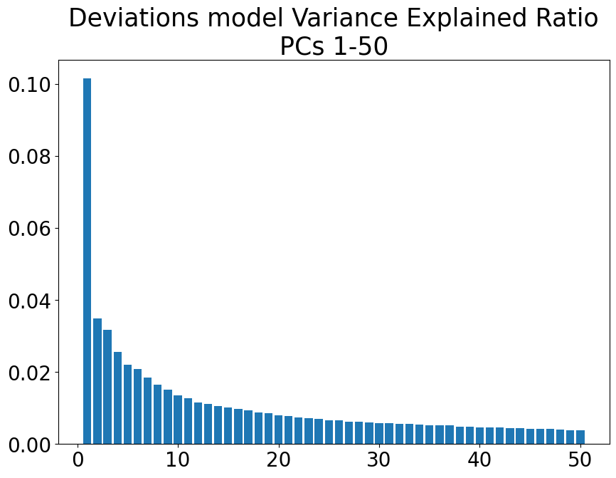
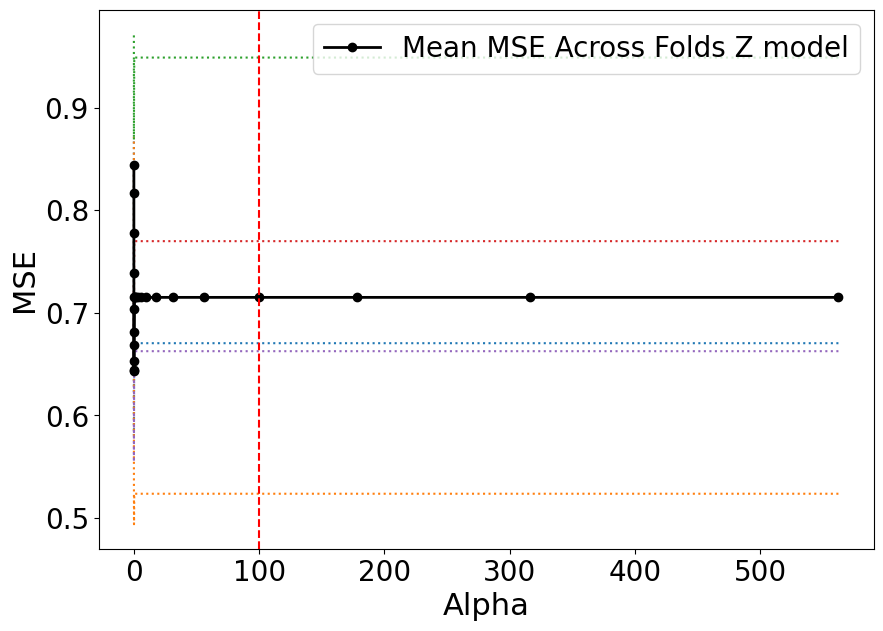
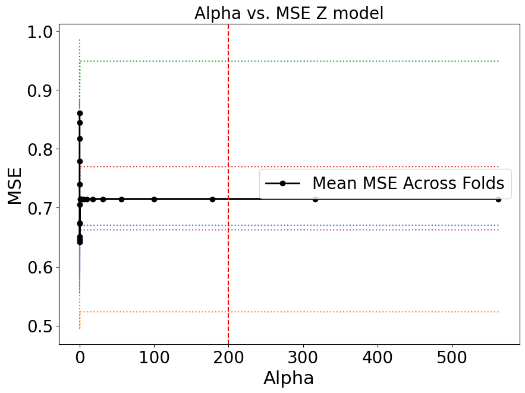

<!DOCTYPE html>
<html class="writer-html5" lang="en" data-content_root="../">
<head>
  <meta charset="utf-8" /><meta name="viewport" content="width=device-width, initial-scale=1" />

  <meta name="viewport" content="width=device-width, initial-scale=1.0" />
  <title>Load Data &mdash; Predictive Clinical Neuroscience Toolkit 0.20 documentation</title>
      <link rel="stylesheet" type="text/css" href="../_static/pygments.css?v=b76e3c8a" />
      <link rel="stylesheet" type="text/css" href="../_static/css/theme.css?v=e59714d7" />
      <link rel="stylesheet" type="text/css" href="../_static/graphviz.css?v=fd3f3429" />
      <link rel="stylesheet" type="text/css" href="../_static/pages/css/pcntoolkit_tabs.css" />
      <link rel="stylesheet" type="text/css" href="../_static/pages/css/pcntoolkit.css" />
      <link rel="stylesheet" type="text/css" href="../_static/pages/css/pcntoolkit_nomaxwidth.css" />

  
      <script src="../_static/jquery.js?v=5d32c60e"></script>
      <script src="../_static/_sphinx_javascript_frameworks_compat.js?v=2cd50e6c"></script>
      <script src="../_static/documentation_options.js?v=0144e382"></script>
      <script src="../_static/doctools.js?v=9a2dae69"></script>
      <script src="../_static/sphinx_highlight.js?v=dc90522c"></script>
    <script src="../_static/js/theme.js"></script>
    <link rel="index" title="Index" href="../genindex.html" />
    <link rel="search" title="Search" href="../search.html" />
    <link rel="next" title="Frequently Asked Questions" href="FAQs.html" />
    <link rel="prev" title="Post-hoc analysis on normative modeling outputs" href="post_hoc_analysis.html" /> 
</head>

<body class="wy-body-for-nav"> 
  <div class="wy-grid-for-nav">
    <nav data-toggle="wy-nav-shift" class="wy-nav-side">
      <div class="wy-side-scroll">
        <div class="wy-side-nav-search" >

          
          
          <a href="../index.html">
            
              
          </a>
<div role="search">
  <form id="rtd-search-form" class="wy-form" action="../search.html" method="get">
    <input type="text" name="q" placeholder="Search docs" aria-label="Search docs" />
    <input type="hidden" name="check_keywords" value="yes" />
    <input type="hidden" name="area" value="default" />
  </form>
</div>
        </div><div class="wy-menu wy-menu-vertical" data-spy="affix" role="navigation" aria-label="Navigation menu">
              <p class="caption" role="heading"><span class="caption-text">Getting started</span></p>
<ul>
<li class="toctree-l1"><a class="reference internal" href="installation.html">Installation</a></li>
</ul>
<p class="caption" role="heading"><span class="caption-text">Background</span></p>
<ul>
<li class="toctree-l1"><a class="reference internal" href="pcntoolkit_background.html">PCNtoolkit Background</a></li>
</ul>
<p class="caption" role="heading"><span class="caption-text">Function &amp; Class Docs</span></p>
<ul>
<li class="toctree-l1"><a class="reference internal" href="modindex.html">Module Index</a></li>
</ul>
<p class="caption" role="heading"><span class="caption-text">Tutorials</span></p>
<ul class="current">
<li class="toctree-l1"><a class="reference internal" href="normative_modelling_walkthrough.html"><strong>DEMO ON NORMATIVE MODELING</strong></a></li>
<li class="toctree-l1"><a class="reference internal" href="HBR_NormativeModel_FCONdata_Tutorial.html">Predictive Clinical Neuroscience Toolkit</a></li>
<li class="toctree-l1"><a class="reference internal" href="HBR_NormativeModel_FCONdata_Tutorial.html#hierarchical-bayesian-regression-normative-modelling-and-transfer-onto-unseen-site">Hierarchical Bayesian Regression Normative Modelling and Transfer onto unseen site.</a></li>
<li class="toctree-l1"><a class="reference internal" href="apply_normative_models.html">Using lifespan models to make predictions on new data</a></li>
<li class="toctree-l1"><a class="reference internal" href="BLR_normativemodel_protocol.html">Predictive Clinical Neuroscience Toolkit</a></li>
<li class="toctree-l1"><a class="reference internal" href="BLR_normativemodel_protocol.html#the-normative-modeling-framework-for-computational-psychiatry-protocol">The Normative Modeling Framework for Computational Psychiatry Protocol</a></li>
<li class="toctree-l1"><a class="reference internal" href="BLR_normativemodel_protocol.html#data-preparation">Data Preparation</a></li>
<li class="toctree-l1"><a class="reference internal" href="BLR_normativemodel_protocol.html#algorithm-modeling">Algorithm &amp; Modeling</a></li>
<li class="toctree-l1"><a class="reference internal" href="BLR_normativemodel_protocol.html#evaluation-interpretation">Evaluation &amp; Interpretation</a></li>
<li class="toctree-l1"><a class="reference internal" href="visualizations.html">Visualization of normative modeling outputs</a></li>
<li class="toctree-l1"><a class="reference internal" href="post_hoc_analysis.html">Post-hoc analysis on normative modeling outputs</a></li>
<li class="toctree-l1 current"><a class="current reference internal" href="#">Load Data</a></li>
<li class="toctree-l1"><a class="reference internal" href="#create-train-test-splits">Create Train/Test Splits</a></li>
<li class="toctree-l1"><a class="reference internal" href="#principal-component-regression-bbs">Principal Component Regression (BBS)</a><ul>
<li class="toctree-l2"><a class="reference internal" href="#fit-linear-regression-model">Fit Linear Regression Model</a></li>
<li class="toctree-l2"><a class="reference internal" href="#accuracy-of-predictions">Accuracy of Predictions</a></li>
<li class="toctree-l2"><a class="reference internal" href="#bbs-cross-validation">BBS Cross Validation</a></li>
</ul>
</li>
<li class="toctree-l1"><a class="reference internal" href="#connectome-predictive-modelling">Connectome Predictive Modelling</a><ul>
<li class="toctree-l2"><a class="reference internal" href="#cpm-cross-validation">CPM Cross Validation</a></li>
</ul>
</li>
<li class="toctree-l1"><a class="reference internal" href="#lasso-linear-regression-l1-regularization">Lasso (Linear Regression + L1 Regularization)</a></li>
<li class="toctree-l1"><a class="reference internal" href="#ridge-linear-regression-l2-regularization">Ridge (Linear Regression + L2 Regularization)</a></li>
<li class="toctree-l1"><a class="reference internal" href="#elastic-net-linear-regression-l1-l2-regularization">Elastic Net (Linear Regression + L1/L2 Regularization)</a></li>
</ul>
<p class="caption" role="heading"><span class="caption-text">Other Useful Stuff</span></p>
<ul>
<li class="toctree-l1"><a class="reference internal" href="FAQs.html">Frequently Asked Questions</a></li>
<li class="toctree-l1"><a class="reference internal" href="glossary.html">Glossary</a></li>
<li class="toctree-l1"><a class="reference internal" href="citing.html">How to cite PCNtoolkit</a></li>
<li class="toctree-l1"><a class="reference internal" href="acknowledgements.html">Acknowledgements</a></li>
</ul>

        </div>
      </div>
    </nav>

    <section data-toggle="wy-nav-shift" class="wy-nav-content-wrap"><nav class="wy-nav-top" aria-label="Mobile navigation menu" >
          <i data-toggle="wy-nav-top" class="fa fa-bars"></i>
          <a href="../index.html">Predictive Clinical Neuroscience Toolkit</a>
      </nav>

      <div class="wy-nav-content">
        <div class="rst-content">
          <div role="navigation" aria-label="Page navigation">
  <ul class="wy-breadcrumbs">
      <li><a href="../index.html" class="icon icon-home" aria-label="Home"></a></li>
      <li class="breadcrumb-item active">Load Data</li>
      <li class="wy-breadcrumbs-aside">
            <a href="../_sources/pages/other_predictive_models.rst.txt" rel="nofollow"> View page source</a>
      </li>
  </ul>
  <hr/>
</div>
          <div role="main" class="document" itemscope="itemscope" itemtype="http://schema.org/Article">
           <div itemprop="articleBody">
             
  <div class="highlight-ipython3 notranslate"><div class="highlight"><pre><span></span><span class="o">!</span><span class="w"> </span>git<span class="w"> </span>clone<span class="w"> </span>https://github.com/predictive-clinical-neuroscience/PCNtoolkit-demo.git
</pre></div>
</div>
<div class="highlight-none notranslate"><div class="highlight"><pre><span></span>Cloning into &#39;PCNtoolkit-demo&#39;...
remote: Enumerating objects: 1237, done.
remote: Counting objects: 100% (360/360), done.
remote: Compressing objects: 100% (185/185), done.
remote: Total 1237 (delta 200), reused 306 (delta 172), pack-reused 877 (from 1)
Receiving objects: 100% (1237/1237), 141.45 MiB | 10.83 MiB/s, done.
Resolving deltas: 100% (562/562), done.
Updating files: 100% (70/70), done.
</pre></div>
</div>
<div class="highlight-ipython3 notranslate"><div class="highlight"><pre><span></span><span class="kn">import</span> <span class="nn">os</span>
</pre></div>
</div>
<div class="highlight-ipython3 notranslate"><div class="highlight"><pre><span></span><span class="n">os</span><span class="o">.</span><span class="n">chdir</span><span class="p">(</span><span class="s1">&#39;/content/PCNtoolkit-demo/&#39;</span><span class="p">)</span>
</pre></div>
</div>
<div class="highlight-ipython3 notranslate"><div class="highlight"><pre><span></span><span class="kn">from</span> <span class="nn">IPython.core.display</span> <span class="kn">import</span> <span class="n">display</span><span class="p">,</span> <span class="n">HTML</span>
<span class="n">display</span><span class="p">(</span><span class="n">HTML</span><span class="p">(</span><span class="s2">&quot;&lt;style&gt;.container { width:95% !important; }&lt;/style&gt;&quot;</span><span class="p">))</span>
</pre></div>
</div>
<style>.container { width:95% !important; }</style><div class="highlight-ipython3 notranslate"><div class="highlight"><pre><span></span><span class="kn">import</span> <span class="nn">numpy</span> <span class="k">as</span> <span class="nn">np</span>
<span class="kn">from</span> <span class="nn">matplotlib</span> <span class="kn">import</span> <span class="n">pyplot</span> <span class="k">as</span> <span class="n">plt</span>
<span class="kn">from</span> <span class="nn">scipy</span> <span class="kn">import</span> <span class="n">stats</span><span class="p">,</span> <span class="n">linalg</span>
<span class="kn">from</span> <span class="nn">sklearn</span> <span class="kn">import</span> <span class="n">preprocessing</span><span class="p">,</span> <span class="n">decomposition</span><span class="p">,</span> <span class="n">linear_model</span><span class="p">,</span> <span class="n">metrics</span>
<span class="kn">import</span> <span class="nn">warnings</span>
</pre></div>
</div>
<div class="highlight-ipython3 notranslate"><div class="highlight"><pre><span></span><span class="c1"># set fontsizes for matplotlib plots</span>
<span class="n">baseline_fontsize</span> <span class="o">=</span> <span class="mi">12</span>
<span class="n">SMALL_SIZE</span> <span class="o">=</span> <span class="mi">8</span> <span class="o">+</span> <span class="n">baseline_fontsize</span>
<span class="n">MEDIUM_SIZE</span> <span class="o">=</span> <span class="mi">10</span> <span class="o">+</span> <span class="n">baseline_fontsize</span>
<span class="n">BIGGER_SIZE</span> <span class="o">=</span> <span class="mi">12</span> <span class="o">+</span> <span class="n">baseline_fontsize</span>

<span class="n">plt</span><span class="o">.</span><span class="n">rc</span><span class="p">(</span><span class="s1">&#39;font&#39;</span><span class="p">,</span> <span class="n">size</span><span class="o">=</span><span class="n">SMALL_SIZE</span><span class="p">)</span>          <span class="c1"># controls default text sizes</span>
<span class="n">plt</span><span class="o">.</span><span class="n">rc</span><span class="p">(</span><span class="s1">&#39;axes&#39;</span><span class="p">,</span> <span class="n">titlesize</span><span class="o">=</span><span class="n">SMALL_SIZE</span><span class="p">)</span>     <span class="c1"># fontsize of the axes title</span>
<span class="n">plt</span><span class="o">.</span><span class="n">rc</span><span class="p">(</span><span class="s1">&#39;axes&#39;</span><span class="p">,</span> <span class="n">labelsize</span><span class="o">=</span><span class="n">MEDIUM_SIZE</span><span class="p">)</span>    <span class="c1"># fontsize of the x and y labels</span>
<span class="n">plt</span><span class="o">.</span><span class="n">rc</span><span class="p">(</span><span class="s1">&#39;xtick&#39;</span><span class="p">,</span> <span class="n">labelsize</span><span class="o">=</span><span class="n">SMALL_SIZE</span><span class="p">)</span>    <span class="c1"># fontsize of the tick labels</span>
<span class="n">plt</span><span class="o">.</span><span class="n">rc</span><span class="p">(</span><span class="s1">&#39;ytick&#39;</span><span class="p">,</span> <span class="n">labelsize</span><span class="o">=</span><span class="n">SMALL_SIZE</span><span class="p">)</span>    <span class="c1"># fontsize of the tick labels</span>
<span class="n">plt</span><span class="o">.</span><span class="n">rc</span><span class="p">(</span><span class="s1">&#39;legend&#39;</span><span class="p">,</span> <span class="n">fontsize</span><span class="o">=</span><span class="n">SMALL_SIZE</span><span class="p">)</span>    <span class="c1"># legend fontsize</span>
<span class="n">plt</span><span class="o">.</span><span class="n">rc</span><span class="p">(</span><span class="s1">&#39;figure&#39;</span><span class="p">,</span> <span class="n">titlesize</span><span class="o">=</span><span class="n">BIGGER_SIZE</span><span class="p">)</span>  <span class="c1"># fontsize of the figure title</span>
</pre></div>
</div>
<section id="load-data">
<h1>Load Data<a class="headerlink" href="#load-data" title="Link to this heading"></a></h1>
<div class="highlight-ipython3 notranslate"><div class="highlight"><pre><span></span><span class="n">hcp_z</span> <span class="o">=</span> <span class="n">np</span><span class="o">.</span><span class="n">load</span><span class="p">(</span><span class="s1">&#39;data/hcpya_z.npy&#39;</span><span class="p">)</span>
<span class="n">hcp_ct</span> <span class="o">=</span> <span class="n">np</span><span class="o">.</span><span class="n">load</span><span class="p">(</span><span class="s1">&#39;data/hcpya_ct.npy&#39;</span><span class="p">)</span>
<span class="n">gscores</span> <span class="o">=</span> <span class="n">np</span><span class="o">.</span><span class="n">load</span><span class="p">(</span><span class="s1">&#39;data/hcpya_g.npy&#39;</span><span class="p">)</span>
</pre></div>
</div>
<div class="highlight-ipython3 notranslate"><div class="highlight"><pre><span></span><span class="nb">print</span><span class="p">(</span><span class="n">hcp_z</span><span class="o">.</span><span class="n">shape</span><span class="p">)</span>
<span class="nb">print</span><span class="p">(</span><span class="n">hcp_ct</span><span class="o">.</span><span class="n">shape</span><span class="p">)</span>
<span class="nb">print</span><span class="p">(</span><span class="n">gscores</span><span class="o">.</span><span class="n">shape</span><span class="p">)</span>
</pre></div>
</div>
<div class="highlight-none notranslate"><div class="highlight"><pre><span></span>(946, 187)
(946, 151)
(946,)
</pre></div>
</div>
</section>
<section id="create-train-test-splits">
<h1>Create Train/Test Splits<a class="headerlink" href="#create-train-test-splits" title="Link to this heading"></a></h1>
<div class="highlight-ipython3 notranslate"><div class="highlight"><pre><span></span><span class="c1"># generate train/test splits</span>
<span class="n">np</span><span class="o">.</span><span class="n">random</span><span class="o">.</span><span class="n">seed</span><span class="p">(</span><span class="mi">42</span><span class="p">)</span>
<span class="n">n_train</span> <span class="o">=</span> <span class="nb">int</span><span class="p">(</span><span class="mf">0.8</span> <span class="o">*</span> <span class="n">hcp_z</span><span class="o">.</span><span class="n">shape</span><span class="p">[</span><span class="mi">0</span><span class="p">])</span>

<span class="n">train_idxs</span> <span class="o">=</span> <span class="n">np</span><span class="o">.</span><span class="n">random</span><span class="o">.</span><span class="n">choice</span><span class="p">(</span><span class="nb">range</span><span class="p">(</span><span class="n">hcp_z</span><span class="o">.</span><span class="n">shape</span><span class="p">[</span><span class="mi">0</span><span class="p">]),</span> <span class="n">size</span><span class="o">=</span><span class="n">n_train</span><span class="p">,</span> <span class="n">replace</span><span class="o">=</span><span class="kc">False</span><span class="p">)</span>
<span class="n">test_idxs</span> <span class="o">=</span> <span class="n">np</span><span class="o">.</span><span class="n">array</span><span class="p">([</span><span class="n">x</span> <span class="k">for</span> <span class="n">x</span> <span class="ow">in</span> <span class="nb">range</span><span class="p">(</span><span class="n">hcp_z</span><span class="o">.</span><span class="n">shape</span><span class="p">[</span><span class="mi">0</span><span class="p">])</span> <span class="k">if</span> <span class="n">x</span> <span class="ow">not</span> <span class="ow">in</span> <span class="n">train_idxs</span><span class="p">])</span>
</pre></div>
</div>
<div class="highlight-ipython3 notranslate"><div class="highlight"><pre><span></span><span class="n">train_data_z</span> <span class="o">=</span> <span class="n">hcp_z</span><span class="p">[</span><span class="n">train_idxs</span><span class="p">,</span> <span class="p">:]</span>
<span class="n">test_data_z</span> <span class="o">=</span> <span class="n">hcp_z</span><span class="p">[</span><span class="n">test_idxs</span><span class="p">,</span> <span class="p">:]</span>

<span class="n">train_data_ct</span> <span class="o">=</span> <span class="n">hcp_ct</span><span class="p">[</span><span class="n">train_idxs</span><span class="p">,</span> <span class="p">:]</span>
<span class="n">test_data_ct</span> <span class="o">=</span> <span class="n">hcp_ct</span><span class="p">[</span><span class="n">test_idxs</span><span class="p">,</span> <span class="p">:]</span>

<span class="n">train_phen</span> <span class="o">=</span> <span class="n">gscores</span><span class="p">[</span><span class="n">train_idxs</span><span class="p">]</span>
<span class="n">test_phen</span> <span class="o">=</span> <span class="n">gscores</span><span class="p">[</span><span class="n">test_idxs</span><span class="p">]</span>
</pre></div>
</div>
<div class="highlight-ipython3 notranslate"><div class="highlight"><pre><span></span><span class="c1"># mean center train/test data (using train means)</span>
<span class="n">train_mu_centered_z</span> <span class="o">=</span> <span class="p">(</span><span class="n">train_data_z</span> <span class="o">-</span> <span class="n">train_data_z</span><span class="o">.</span><span class="n">mean</span><span class="p">(</span><span class="n">axis</span><span class="o">=</span><span class="mi">0</span><span class="p">))</span>
<span class="n">test_mu_centered_z</span> <span class="o">=</span> <span class="p">(</span><span class="n">test_data_z</span> <span class="o">-</span> <span class="n">train_data_z</span><span class="o">.</span><span class="n">mean</span><span class="p">(</span><span class="n">axis</span><span class="o">=</span><span class="mi">0</span><span class="p">))</span>

<span class="n">train_mu_centered_ct</span> <span class="o">=</span> <span class="p">(</span><span class="n">train_data_ct</span> <span class="o">-</span> <span class="n">train_data_ct</span><span class="o">.</span><span class="n">mean</span><span class="p">(</span><span class="n">axis</span><span class="o">=</span><span class="mi">0</span><span class="p">))</span>
<span class="n">test_mu_centered_ct</span> <span class="o">=</span> <span class="p">(</span><span class="n">test_data_ct</span> <span class="o">-</span> <span class="n">train_data_ct</span><span class="o">.</span><span class="n">mean</span><span class="p">(</span><span class="n">axis</span><span class="o">=</span><span class="mi">0</span><span class="p">))</span>
</pre></div>
</div>
</section>
<section id="principal-component-regression-bbs">
<h1>Principal Component Regression (BBS)<a class="headerlink" href="#principal-component-regression-bbs" title="Link to this heading"></a></h1>
<div class="highlight-ipython3 notranslate"><div class="highlight"><pre><span></span><span class="n">pca_model_z</span> <span class="o">=</span> <span class="n">decomposition</span><span class="o">.</span><span class="n">PCA</span><span class="p">(</span><span class="n">n_components</span><span class="o">=</span><span class="mi">75</span><span class="p">)</span><span class="o">.</span><span class="n">fit</span><span class="p">(</span><span class="n">train_data_z</span><span class="p">)</span>
<span class="c1"># from pca documentation, &quot;the input data is centered but not scaled for each feature before applying the SVD&quot;</span>
</pre></div>
</div>
<div class="highlight-ipython3 notranslate"><div class="highlight"><pre><span></span><span class="n">pca_model_ct</span> <span class="o">=</span> <span class="n">decomposition</span><span class="o">.</span><span class="n">PCA</span><span class="p">(</span><span class="n">n_components</span><span class="o">=</span><span class="mi">75</span><span class="p">)</span><span class="o">.</span><span class="n">fit</span><span class="p">(</span><span class="n">train_data_ct</span><span class="p">)</span>
<span class="c1"># from pca documentation, &quot;the input data is centered but not scaled for each feature before applying the SVD&quot;</span>
</pre></div>
</div>
<div class="highlight-ipython3 notranslate"><div class="highlight"><pre><span></span><span class="nb">print</span><span class="p">(</span><span class="sa">f</span><span class="s1">&#39;First PC explains </span><span class="si">{</span><span class="n">pca_model_z</span><span class="o">.</span><span class="n">explained_variance_ratio_</span><span class="p">[</span><span class="mi">0</span><span class="p">]</span><span class="o">*</span><span class="mi">100</span><span class="si">:</span><span class="s1">.2f</span><span class="si">}</span><span class="s1">% of the total variance.</span><span class="se">\n</span><span class="s1">This is an artifact of zero inflated data&#39;</span><span class="p">)</span>
<span class="n">plt</span><span class="o">.</span><span class="n">figure</span><span class="p">(</span><span class="n">figsize</span><span class="o">=</span><span class="p">(</span><span class="mi">10</span><span class="p">,</span> <span class="mi">7</span><span class="p">))</span>
<span class="n">plt</span><span class="o">.</span><span class="n">bar</span><span class="p">(</span><span class="nb">range</span><span class="p">(</span><span class="mi">1</span><span class="p">,</span> <span class="mi">51</span><span class="p">),</span> <span class="n">pca_model_z</span><span class="o">.</span><span class="n">explained_variance_ratio_</span><span class="p">[</span><span class="mi">1</span><span class="p">:</span><span class="mi">51</span><span class="p">])</span>
<span class="n">plt</span><span class="o">.</span><span class="n">title</span><span class="p">(</span><span class="s1">&#39;Deviations model Variance Explained Ratio</span><span class="se">\n</span><span class="s1">PCs 1-50&#39;</span><span class="p">,</span> <span class="n">fontsize</span><span class="o">=</span><span class="mi">25</span><span class="p">)</span>
<span class="n">plt</span><span class="o">.</span><span class="n">show</span><span class="p">()</span>
</pre></div>
</div>
<div class="highlight-none notranslate"><div class="highlight"><pre><span></span>First PC explains 23.41% of the total variance.
This is an artifact of zero inflated data
</pre></div>
</div>

<div class="highlight-ipython3 notranslate"><div class="highlight"><pre><span></span><span class="nb">print</span><span class="p">(</span><span class="sa">f</span><span class="s1">&#39;First PC explains </span><span class="si">{</span><span class="n">pca_model_ct</span><span class="o">.</span><span class="n">explained_variance_ratio_</span><span class="p">[</span><span class="mi">0</span><span class="p">]</span><span class="o">*</span><span class="mi">100</span><span class="si">:</span><span class="s1">.2f</span><span class="si">}</span><span class="s1">% of the total variance.</span><span class="se">\n</span><span class="s1">This is an artifact of zero inflated data&#39;</span><span class="p">)</span>
<span class="n">plt</span><span class="o">.</span><span class="n">figure</span><span class="p">(</span><span class="n">figsize</span><span class="o">=</span><span class="p">(</span><span class="mi">10</span><span class="p">,</span> <span class="mi">7</span><span class="p">))</span>
<span class="n">plt</span><span class="o">.</span><span class="n">bar</span><span class="p">(</span><span class="nb">range</span><span class="p">(</span><span class="mi">1</span><span class="p">,</span> <span class="mi">51</span><span class="p">),</span> <span class="n">pca_model_ct</span><span class="o">.</span><span class="n">explained_variance_ratio_</span><span class="p">[</span><span class="mi">1</span><span class="p">:</span><span class="mi">51</span><span class="p">])</span>
<span class="n">plt</span><span class="o">.</span><span class="n">title</span><span class="p">(</span><span class="s1">&#39;Cortical Thickness model Variance Explained Ratio</span><span class="se">\n</span><span class="s1">PCs 1-50&#39;</span><span class="p">,</span> <span class="n">fontsize</span><span class="o">=</span><span class="mi">25</span><span class="p">)</span>
<span class="n">plt</span><span class="o">.</span><span class="n">show</span><span class="p">()</span>
</pre></div>
</div>
<div class="highlight-none notranslate"><div class="highlight"><pre><span></span>First PC explains 24.28% of the total variance.
This is an artifact of zero inflated data
</pre></div>
</div>

<div class="highlight-ipython3 notranslate"><div class="highlight"><pre><span></span><span class="n">train_transformed_z</span> <span class="o">=</span> <span class="n">pca_model_z</span><span class="o">.</span><span class="n">transform</span><span class="p">(</span><span class="n">train_data_z</span><span class="p">)</span>
<span class="n">test_transformed_z</span> <span class="o">=</span> <span class="n">pca_model_z</span><span class="o">.</span><span class="n">transform</span><span class="p">(</span><span class="n">test_data_z</span><span class="p">)</span>
</pre></div>
</div>
<div class="highlight-ipython3 notranslate"><div class="highlight"><pre><span></span><span class="n">train_transformed_ct</span> <span class="o">=</span> <span class="n">pca_model_ct</span><span class="o">.</span><span class="n">transform</span><span class="p">(</span><span class="n">train_data_ct</span><span class="p">)</span>
<span class="n">test_transformed_ct</span> <span class="o">=</span> <span class="n">pca_model_ct</span><span class="o">.</span><span class="n">transform</span><span class="p">(</span><span class="n">test_data_ct</span><span class="p">)</span>
</pre></div>
</div>
<section id="fit-linear-regression-model">
<h2>Fit Linear Regression Model<a class="headerlink" href="#fit-linear-regression-model" title="Link to this heading"></a></h2>
<div class="highlight-ipython3 notranslate"><div class="highlight"><pre><span></span><span class="c1"># fast OLS using matrix math</span>
<span class="c1"># we will check that this matches sklearn results later</span>

<span class="c1"># fit ols model on dimension reduced train data</span>
<span class="n">train_features_z</span> <span class="o">=</span> <span class="n">np</span><span class="o">.</span><span class="n">hstack</span><span class="p">([</span><span class="n">np</span><span class="o">.</span><span class="n">ones</span><span class="p">((</span><span class="n">train_transformed_z</span><span class="o">.</span><span class="n">shape</span><span class="p">[</span><span class="mi">0</span><span class="p">],</span> <span class="mi">1</span><span class="p">)),</span>
                            <span class="n">train_transformed_z</span><span class="p">])</span>
<span class="n">train_features_inv_z</span> <span class="o">=</span> <span class="n">linalg</span><span class="o">.</span><span class="n">pinv</span><span class="p">(</span><span class="n">train_features_z</span><span class="p">)</span>
<span class="n">train_betas_z</span> <span class="o">=</span> <span class="n">np</span><span class="o">.</span><span class="n">dot</span><span class="p">(</span><span class="n">train_features_inv_z</span><span class="p">,</span> <span class="n">train_phen</span><span class="p">)</span>
<span class="n">train_pred_phen_z</span> <span class="o">=</span> <span class="n">np</span><span class="o">.</span><span class="n">dot</span><span class="p">(</span><span class="n">train_features_z</span><span class="p">,</span> <span class="n">train_betas_z</span><span class="p">)</span>

<span class="c1"># fit ols model on dimension reduced test data</span>
<span class="n">test_features_z</span> <span class="o">=</span> <span class="n">np</span><span class="o">.</span><span class="n">hstack</span><span class="p">([</span><span class="n">np</span><span class="o">.</span><span class="n">ones</span><span class="p">((</span><span class="n">test_transformed_z</span><span class="o">.</span><span class="n">shape</span><span class="p">[</span><span class="mi">0</span><span class="p">],</span> <span class="mi">1</span><span class="p">)),</span>
                           <span class="n">test_transformed_z</span><span class="p">])</span>
<span class="n">test_pred_phen_z</span> <span class="o">=</span> <span class="n">np</span><span class="o">.</span><span class="n">dot</span><span class="p">(</span><span class="n">test_features_z</span><span class="p">,</span> <span class="n">train_betas_z</span><span class="p">)</span>
</pre></div>
</div>
<div class="highlight-ipython3 notranslate"><div class="highlight"><pre><span></span><span class="c1"># fast OLS using matrix math</span>
<span class="c1"># we will check that this matches sklearn results later</span>

<span class="c1"># fit ols model on dimension reduced train data</span>
<span class="n">train_features_ct</span> <span class="o">=</span> <span class="n">np</span><span class="o">.</span><span class="n">hstack</span><span class="p">([</span><span class="n">np</span><span class="o">.</span><span class="n">ones</span><span class="p">((</span><span class="n">train_transformed_ct</span><span class="o">.</span><span class="n">shape</span><span class="p">[</span><span class="mi">0</span><span class="p">],</span> <span class="mi">1</span><span class="p">)),</span>
                            <span class="n">train_transformed_ct</span><span class="p">])</span>
<span class="n">train_features_inv_ct</span> <span class="o">=</span> <span class="n">linalg</span><span class="o">.</span><span class="n">pinv</span><span class="p">(</span><span class="n">train_features_ct</span><span class="p">)</span>
<span class="n">train_betas_ct</span> <span class="o">=</span> <span class="n">np</span><span class="o">.</span><span class="n">dot</span><span class="p">(</span><span class="n">train_features_inv_ct</span><span class="p">,</span> <span class="n">train_phen</span><span class="p">)</span>
<span class="n">train_pred_phen_ct</span> <span class="o">=</span> <span class="n">np</span><span class="o">.</span><span class="n">dot</span><span class="p">(</span><span class="n">train_features_ct</span><span class="p">,</span> <span class="n">train_betas_ct</span><span class="p">)</span>

<span class="c1"># fit ols model on dimension reduced test data</span>
<span class="n">test_features_ct</span> <span class="o">=</span> <span class="n">np</span><span class="o">.</span><span class="n">hstack</span><span class="p">([</span><span class="n">np</span><span class="o">.</span><span class="n">ones</span><span class="p">((</span><span class="n">test_transformed_ct</span><span class="o">.</span><span class="n">shape</span><span class="p">[</span><span class="mi">0</span><span class="p">],</span> <span class="mi">1</span><span class="p">)),</span>
                           <span class="n">test_transformed_ct</span><span class="p">])</span>
<span class="n">test_pred_phen_ct</span> <span class="o">=</span> <span class="n">np</span><span class="o">.</span><span class="n">dot</span><span class="p">(</span><span class="n">test_features_ct</span><span class="p">,</span> <span class="n">train_betas_ct</span><span class="p">)</span>
</pre></div>
</div>
<div class="highlight-ipython3 notranslate"><div class="highlight"><pre><span></span><span class="c1"># OLS using sklearn</span>

<span class="n">lr_model_z</span> <span class="o">=</span> <span class="n">linear_model</span><span class="o">.</span><span class="n">LinearRegression</span><span class="p">(</span><span class="n">fit_intercept</span><span class="o">=</span><span class="kc">True</span><span class="p">)</span>
<span class="n">lr_model_z</span><span class="o">.</span><span class="n">fit</span><span class="p">(</span><span class="n">train_transformed_z</span><span class="p">,</span> <span class="n">train_phen</span><span class="p">)</span>
<span class="n">train_pred_phen_lr_model_z</span> <span class="o">=</span> <span class="n">lr_model_z</span><span class="o">.</span><span class="n">predict</span><span class="p">(</span><span class="n">train_transformed_z</span><span class="p">)</span>
<span class="n">test_pred_phen_lr_model_z</span> <span class="o">=</span> <span class="n">lr_model_z</span><span class="o">.</span><span class="n">predict</span><span class="p">(</span><span class="n">test_transformed_z</span><span class="p">)</span>
</pre></div>
</div>
<div class="highlight-ipython3 notranslate"><div class="highlight"><pre><span></span><span class="c1"># OLS using sklearn</span>

<span class="n">lr_model_ct</span> <span class="o">=</span> <span class="n">linear_model</span><span class="o">.</span><span class="n">LinearRegression</span><span class="p">(</span><span class="n">fit_intercept</span><span class="o">=</span><span class="kc">True</span><span class="p">)</span>
<span class="n">lr_model_ct</span><span class="o">.</span><span class="n">fit</span><span class="p">(</span><span class="n">train_transformed_ct</span><span class="p">,</span> <span class="n">train_phen</span><span class="p">)</span>
<span class="n">train_pred_phen_lr_model_ct</span> <span class="o">=</span> <span class="n">lr_model_ct</span><span class="o">.</span><span class="n">predict</span><span class="p">(</span><span class="n">train_transformed_ct</span><span class="p">)</span>
<span class="n">test_pred_phen_lr_model_ct</span> <span class="o">=</span> <span class="n">lr_model_ct</span><span class="o">.</span><span class="n">predict</span><span class="p">(</span><span class="n">test_transformed_ct</span><span class="p">)</span>
</pre></div>
</div>
<div class="highlight-ipython3 notranslate"><div class="highlight"><pre><span></span><span class="c1"># ensure matrix math predictions and sklearn predictions are accurate to 5 decimals</span>
<span class="k">assert</span> <span class="n">np</span><span class="o">.</span><span class="n">allclose</span><span class="p">(</span><span class="n">np</span><span class="o">.</span><span class="n">round</span><span class="p">(</span><span class="n">train_pred_phen_z</span> <span class="o">-</span> <span class="n">train_pred_phen_lr_model_z</span><span class="p">,</span> <span class="mi">5</span><span class="p">),</span> <span class="mi">0</span><span class="p">),</span> <span class="s1">&#39;Failed&#39;</span>
<span class="k">assert</span> <span class="n">np</span><span class="o">.</span><span class="n">allclose</span><span class="p">(</span><span class="n">np</span><span class="o">.</span><span class="n">round</span><span class="p">(</span><span class="n">test_pred_phen_z</span> <span class="o">-</span> <span class="n">test_pred_phen_lr_model_z</span><span class="p">,</span> <span class="mi">5</span><span class="p">),</span> <span class="mi">0</span><span class="p">),</span> <span class="s1">&#39;Failed&#39;</span>
<span class="nb">print</span><span class="p">(</span><span class="s1">&#39;Passed&#39;</span><span class="p">)</span>
</pre></div>
</div>
<div class="highlight-none notranslate"><div class="highlight"><pre><span></span>Passed
</pre></div>
</div>
<div class="highlight-ipython3 notranslate"><div class="highlight"><pre><span></span><span class="c1"># ensure matrix math predictions and sklearn predictions are accurate to 5 decimals</span>
<span class="k">assert</span> <span class="n">np</span><span class="o">.</span><span class="n">allclose</span><span class="p">(</span><span class="n">np</span><span class="o">.</span><span class="n">round</span><span class="p">(</span><span class="n">train_pred_phen_ct</span> <span class="o">-</span> <span class="n">train_pred_phen_lr_model_ct</span><span class="p">,</span> <span class="mi">5</span><span class="p">),</span> <span class="mi">0</span><span class="p">),</span> <span class="s1">&#39;Failed&#39;</span>
<span class="k">assert</span> <span class="n">np</span><span class="o">.</span><span class="n">allclose</span><span class="p">(</span><span class="n">np</span><span class="o">.</span><span class="n">round</span><span class="p">(</span><span class="n">test_pred_phen_ct</span> <span class="o">-</span> <span class="n">test_pred_phen_lr_model_ct</span><span class="p">,</span> <span class="mi">5</span><span class="p">),</span> <span class="mi">0</span><span class="p">),</span> <span class="s1">&#39;Failed&#39;</span>
<span class="nb">print</span><span class="p">(</span><span class="s1">&#39;Passed&#39;</span><span class="p">)</span>
</pre></div>
</div>
<div class="highlight-none notranslate"><div class="highlight"><pre><span></span>Passed
</pre></div>
</div>
</section>
<section id="accuracy-of-predictions">
<h2>Accuracy of Predictions<a class="headerlink" href="#accuracy-of-predictions" title="Link to this heading"></a></h2>
<div class="highlight-ipython3 notranslate"><div class="highlight"><pre><span></span><span class="n">train_r2_z</span> <span class="o">=</span> <span class="n">metrics</span><span class="o">.</span><span class="n">r2_score</span><span class="p">(</span><span class="n">train_phen</span><span class="p">,</span> <span class="n">train_pred_phen_lr_model_z</span><span class="p">)</span>
<span class="n">train_mae_z</span> <span class="o">=</span> <span class="n">metrics</span><span class="o">.</span><span class="n">mean_absolute_error</span><span class="p">(</span><span class="n">train_phen</span><span class="p">,</span> <span class="n">train_pred_phen_lr_model_z</span><span class="p">)</span>
<span class="n">test_mae_z</span> <span class="o">=</span> <span class="n">metrics</span><span class="o">.</span><span class="n">mean_absolute_error</span><span class="p">(</span><span class="n">test_phen</span><span class="p">,</span> <span class="n">test_pred_phen_lr_model_z</span><span class="p">)</span>
<span class="n">train_mae_z</span> <span class="o">=</span> <span class="n">metrics</span><span class="o">.</span><span class="n">mean_squared_error</span><span class="p">(</span><span class="n">train_phen</span><span class="p">,</span> <span class="n">train_pred_phen_lr_model_z</span><span class="p">)</span>
<span class="n">test_mae_z</span> <span class="o">=</span> <span class="n">metrics</span><span class="o">.</span><span class="n">mean_squared_error</span><span class="p">(</span><span class="n">test_phen</span><span class="p">,</span> <span class="n">test_pred_phen_lr_model_z</span><span class="p">)</span>
<span class="nb">print</span><span class="p">(</span><span class="sa">f</span><span class="s1">&#39;Deviation model Train R^2: </span><span class="si">{</span><span class="n">train_r2_z</span><span class="si">:</span><span class="s1">.3f</span><span class="si">}</span><span class="s1">&#39;</span><span class="p">)</span>
<span class="nb">print</span><span class="p">(</span><span class="sa">f</span><span class="s1">&#39;Deviation model Train MAE: </span><span class="si">{</span><span class="n">train_mae_z</span><span class="si">:</span><span class="s1">.3f</span><span class="si">}</span><span class="s1">&#39;</span><span class="p">)</span>
<span class="nb">print</span><span class="p">(</span><span class="sa">f</span><span class="s1">&#39;Deviation model Test MAE: </span><span class="si">{</span><span class="n">test_mae_z</span><span class="si">:</span><span class="s1">.3f</span><span class="si">}</span><span class="s1">&#39;</span><span class="p">)</span>
<span class="nb">print</span><span class="p">(</span><span class="sa">f</span><span class="s1">&#39;Deviation model Train MSE: </span><span class="si">{</span><span class="n">train_mae_z</span><span class="si">:</span><span class="s1">.3f</span><span class="si">}</span><span class="s1">&#39;</span><span class="p">)</span>
<span class="nb">print</span><span class="p">(</span><span class="sa">f</span><span class="s1">&#39;Deviation model Test MSE: </span><span class="si">{</span><span class="n">test_mae_z</span><span class="si">:</span><span class="s1">.3f</span><span class="si">}</span><span class="s1">&#39;</span><span class="p">)</span>
</pre></div>
</div>
<div class="highlight-none notranslate"><div class="highlight"><pre><span></span>Deviation model Train R^2: 0.255
Deviation model Train MAE: 0.532
Deviation model Test MAE: 0.741
Deviation model Train MSE: 0.532
Deviation model Test MSE: 0.741
</pre></div>
</div>
<div class="highlight-ipython3 notranslate"><div class="highlight"><pre><span></span><span class="n">train_r2_ct</span> <span class="o">=</span> <span class="n">metrics</span><span class="o">.</span><span class="n">r2_score</span><span class="p">(</span><span class="n">train_phen</span><span class="p">,</span> <span class="n">train_pred_phen_lr_model_ct</span><span class="p">)</span>
<span class="n">train_mae_ct</span> <span class="o">=</span> <span class="n">metrics</span><span class="o">.</span><span class="n">mean_absolute_error</span><span class="p">(</span><span class="n">train_phen</span><span class="p">,</span> <span class="n">train_pred_phen_lr_model_ct</span><span class="p">)</span>
<span class="n">test_mae_ct</span> <span class="o">=</span> <span class="n">metrics</span><span class="o">.</span><span class="n">mean_absolute_error</span><span class="p">(</span><span class="n">test_phen</span><span class="p">,</span> <span class="n">test_pred_phen_lr_model_ct</span><span class="p">)</span>
<span class="n">train_mae_ct</span> <span class="o">=</span> <span class="n">metrics</span><span class="o">.</span><span class="n">mean_squared_error</span><span class="p">(</span><span class="n">train_phen</span><span class="p">,</span> <span class="n">train_pred_phen_lr_model_ct</span><span class="p">)</span>
<span class="n">test_mae_ct</span> <span class="o">=</span> <span class="n">metrics</span><span class="o">.</span><span class="n">mean_squared_error</span><span class="p">(</span><span class="n">test_phen</span><span class="p">,</span> <span class="n">test_pred_phen_lr_model_ct</span><span class="p">)</span>
<span class="nb">print</span><span class="p">(</span><span class="sa">f</span><span class="s1">&#39;Cortical thickness model Train R^2: </span><span class="si">{</span><span class="n">train_r2_ct</span><span class="si">:</span><span class="s1">.3f</span><span class="si">}</span><span class="s1">&#39;</span><span class="p">)</span>
<span class="nb">print</span><span class="p">(</span><span class="sa">f</span><span class="s1">&#39;Cortical thickness model Train MAE: </span><span class="si">{</span><span class="n">train_mae_ct</span><span class="si">:</span><span class="s1">.3f</span><span class="si">}</span><span class="s1">&#39;</span><span class="p">)</span>
<span class="nb">print</span><span class="p">(</span><span class="sa">f</span><span class="s1">&#39;Cortical thickness model Test MAE: </span><span class="si">{</span><span class="n">test_mae_ct</span><span class="si">:</span><span class="s1">.3f</span><span class="si">}</span><span class="s1">&#39;</span><span class="p">)</span>
<span class="nb">print</span><span class="p">(</span><span class="sa">f</span><span class="s1">&#39;Cortical thickness model Train MSE: </span><span class="si">{</span><span class="n">train_mae_ct</span><span class="si">:</span><span class="s1">.3f</span><span class="si">}</span><span class="s1">&#39;</span><span class="p">)</span>
<span class="nb">print</span><span class="p">(</span><span class="sa">f</span><span class="s1">&#39;Cortical thickness model Test MSE: </span><span class="si">{</span><span class="n">test_mae_ct</span><span class="si">:</span><span class="s1">.3f</span><span class="si">}</span><span class="s1">&#39;</span><span class="p">)</span>
</pre></div>
</div>
<div class="highlight-none notranslate"><div class="highlight"><pre><span></span>Cortical thickness model Train R^2: 0.185
Cortical thickness model Train MAE: 0.582
Cortical thickness model Test MAE: 0.830
Cortical thickness model Train MSE: 0.582
Cortical thickness model Test MSE: 0.830
</pre></div>
</div>
</section>
<section id="bbs-cross-validation">
<h2>BBS Cross Validation<a class="headerlink" href="#bbs-cross-validation" title="Link to this heading"></a></h2>
<div class="highlight-ipython3 notranslate"><div class="highlight"><pre><span></span><span class="k">def</span> <span class="nf">bbs</span><span class="p">(</span><span class="n">X</span><span class="p">,</span> <span class="n">y</span><span class="p">,</span> <span class="n">n_components</span><span class="p">,</span> <span class="n">n_cv_splits</span><span class="p">,</span> <span class="n">pred_summary_function</span><span class="p">,</span> <span class="n">verbose</span><span class="o">=</span><span class="kc">False</span><span class="p">):</span>
    <span class="k">assert</span> <span class="n">X</span><span class="o">.</span><span class="n">shape</span><span class="p">[</span><span class="mi">0</span><span class="p">]</span> <span class="o">==</span> <span class="n">y</span><span class="o">.</span><span class="n">shape</span><span class="p">[</span><span class="mi">0</span><span class="p">]</span>

    <span class="n">fold_accs_train</span> <span class="o">=</span> <span class="p">[]</span>
    <span class="n">fold_accs_test</span> <span class="o">=</span> <span class="p">[]</span>
    <span class="n">np</span><span class="o">.</span><span class="n">random</span><span class="o">.</span><span class="n">seed</span><span class="p">(</span><span class="mi">42</span><span class="p">)</span>
    <span class="n">shuffled_idxs</span> <span class="o">=</span> <span class="n">np</span><span class="o">.</span><span class="n">random</span><span class="o">.</span><span class="n">choice</span><span class="p">(</span><span class="nb">range</span><span class="p">(</span><span class="n">X</span><span class="o">.</span><span class="n">shape</span><span class="p">[</span><span class="mi">0</span><span class="p">]),</span> <span class="n">size</span><span class="o">=</span><span class="n">X</span><span class="o">.</span><span class="n">shape</span><span class="p">[</span><span class="mi">0</span><span class="p">],</span> <span class="n">replace</span><span class="o">=</span><span class="kc">False</span><span class="p">)</span>
    <span class="k">for</span> <span class="n">fold_i</span><span class="p">,</span> <span class="n">test_idxs</span> <span class="ow">in</span> <span class="nb">enumerate</span><span class="p">(</span><span class="n">np</span><span class="o">.</span><span class="n">array_split</span><span class="p">(</span><span class="n">shuffled_idxs</span><span class="p">,</span> <span class="n">n_cv_splits</span><span class="p">)):</span>
        <span class="n">train_mask</span> <span class="o">=</span> <span class="n">np</span><span class="o">.</span><span class="n">ones</span><span class="p">(</span><span class="n">X</span><span class="o">.</span><span class="n">shape</span><span class="p">[</span><span class="mi">0</span><span class="p">],</span> <span class="nb">bool</span><span class="p">)</span>
        <span class="n">train_mask</span><span class="p">[</span><span class="n">test_idxs</span><span class="p">]</span> <span class="o">=</span> <span class="mi">0</span>

        <span class="c1"># create train/text X, y</span>
        <span class="n">train_X</span><span class="p">,</span> <span class="n">test_X</span> <span class="o">=</span> <span class="n">X</span><span class="p">[</span><span class="n">train_mask</span><span class="p">,</span> <span class="p">:],</span> <span class="n">X</span><span class="p">[</span><span class="n">test_idxs</span><span class="p">,</span> <span class="p">:]</span>
        <span class="n">train_y</span><span class="p">,</span> <span class="n">test_y</span> <span class="o">=</span> <span class="n">y</span><span class="p">[</span><span class="n">train_mask</span><span class="p">],</span> <span class="n">y</span><span class="p">[</span><span class="n">test_idxs</span><span class="p">]</span>

        <span class="c1"># mean center columns using train data only</span>
        <span class="n">train_X_mu</span> <span class="o">=</span> <span class="n">train_X</span><span class="o">.</span><span class="n">mean</span><span class="p">(</span><span class="n">axis</span><span class="o">=</span><span class="mi">0</span><span class="p">)</span>
        <span class="n">train_X</span> <span class="o">=</span> <span class="n">train_X</span> <span class="o">-</span> <span class="n">train_X_mu</span>
        <span class="n">test_X</span> <span class="o">=</span> <span class="n">test_X</span> <span class="o">-</span> <span class="n">train_X_mu</span>

        <span class="c1"># fit pca</span>
        <span class="k">if</span> <span class="n">verbose</span><span class="p">:</span>
            <span class="nb">print</span><span class="p">(</span><span class="sa">f</span><span class="s1">&#39;CV Fold: </span><span class="si">{</span><span class="n">fold_i</span><span class="o">+</span><span class="mi">1</span><span class="si">:</span><span class="s1">&lt;10</span><span class="si">}</span><span class="s1"> Fitting PCA model...&#39;</span><span class="p">)</span>
        <span class="n">pca_model</span> <span class="o">=</span> <span class="n">decomposition</span><span class="o">.</span><span class="n">PCA</span><span class="p">(</span><span class="n">n_components</span><span class="o">=</span><span class="n">n_components</span><span class="p">)</span><span class="o">.</span><span class="n">fit</span><span class="p">(</span><span class="n">train_X</span><span class="p">)</span>

        <span class="c1"># dimension reduce train/test data</span>
        <span class="n">train_X</span> <span class="o">=</span> <span class="n">pca_model</span><span class="o">.</span><span class="n">transform</span><span class="p">(</span><span class="n">train_X</span><span class="p">)</span>
        <span class="n">test_X</span> <span class="o">=</span> <span class="n">pca_model</span><span class="o">.</span><span class="n">transform</span><span class="p">(</span><span class="n">test_X</span><span class="p">)</span>

        <span class="c1"># fit OLS model</span>
        <span class="k">if</span> <span class="n">verbose</span><span class="p">:</span>
            <span class="nb">print</span><span class="p">(</span><span class="sa">f</span><span class="s1">&#39;CV Fold: </span><span class="si">{</span><span class="n">fold_i</span><span class="o">+</span><span class="mi">1</span><span class="si">:</span><span class="s1">&lt;10</span><span class="si">}</span><span class="s1"> Fitting Linear Regression model...&#39;</span><span class="p">)</span>
        <span class="n">lr_model</span> <span class="o">=</span> <span class="n">linear_model</span><span class="o">.</span><span class="n">LinearRegression</span><span class="p">(</span><span class="n">fit_intercept</span><span class="o">=</span><span class="kc">True</span><span class="p">)</span>
        <span class="n">lr_model</span><span class="o">.</span><span class="n">fit</span><span class="p">(</span><span class="n">train_X</span><span class="p">,</span> <span class="n">train_y</span><span class="p">)</span>

        <span class="n">train_pred</span> <span class="o">=</span> <span class="n">lr_model</span><span class="o">.</span><span class="n">predict</span><span class="p">(</span><span class="n">train_X</span><span class="p">)</span>
        <span class="n">test_pred</span> <span class="o">=</span> <span class="n">lr_model</span><span class="o">.</span><span class="n">predict</span><span class="p">(</span><span class="n">test_X</span><span class="p">)</span>

        <span class="n">fold_accs_train</span><span class="o">.</span><span class="n">append</span><span class="p">(</span><span class="n">pred_summary_function</span><span class="p">(</span><span class="n">train_y</span><span class="p">,</span> <span class="n">train_pred</span><span class="p">))</span>
        <span class="n">fold_accs_test</span><span class="o">.</span><span class="n">append</span><span class="p">(</span><span class="n">pred_summary_function</span><span class="p">(</span><span class="n">test_y</span><span class="p">,</span> <span class="n">test_pred</span><span class="p">))</span>

        <span class="k">if</span> <span class="n">verbose</span><span class="p">:</span>
            <span class="nb">print</span><span class="p">(</span><span class="sa">f</span><span class="s1">&#39;CV Fold: </span><span class="si">{</span><span class="n">fold_i</span><span class="o">+</span><span class="mi">1</span><span class="si">:</span><span class="s1">&lt;10</span><span class="si">}</span><span class="s1"> Train Accuracy: </span><span class="si">{</span><span class="nb">round</span><span class="p">(</span><span class="n">fold_accs_train</span><span class="p">[</span><span class="o">-</span><span class="mi">1</span><span class="p">],</span><span class="w"> </span><span class="mi">3</span><span class="p">)</span><span class="si">:</span><span class="s1">&lt;10</span><span class="si">}</span><span class="s1"> Test Accuracy: </span><span class="si">{</span><span class="nb">round</span><span class="p">(</span><span class="n">fold_accs_test</span><span class="p">[</span><span class="o">-</span><span class="mi">1</span><span class="p">],</span><span class="w"> </span><span class="mi">3</span><span class="p">)</span><span class="si">:</span><span class="s1">&lt;10</span><span class="si">}</span><span class="s1">&#39;</span><span class="p">)</span>


    <span class="n">plt</span><span class="o">.</span><span class="n">figure</span><span class="p">(</span><span class="n">figsize</span><span class="o">=</span><span class="p">(</span><span class="mi">13</span><span class="p">,</span> <span class="mi">7</span><span class="p">))</span>
    <span class="n">plt</span><span class="o">.</span><span class="n">plot</span><span class="p">(</span><span class="nb">range</span><span class="p">(</span><span class="mi">1</span><span class="p">,</span> <span class="nb">len</span><span class="p">(</span><span class="n">fold_accs_train</span><span class="p">)</span><span class="o">+</span><span class="mi">1</span><span class="p">),</span> <span class="n">fold_accs_train</span><span class="p">,</span> <span class="n">linestyle</span><span class="o">=</span><span class="s1">&#39;-&#39;</span><span class="p">,</span> <span class="n">marker</span><span class="o">=</span><span class="s1">&#39;o&#39;</span><span class="p">,</span> <span class="n">color</span><span class="o">=</span><span class="s1">&#39;C0&#39;</span><span class="p">,</span> <span class="n">label</span><span class="o">=</span><span class="s1">&#39;Train CV Performance&#39;</span><span class="p">)</span>
    <span class="n">plt</span><span class="o">.</span><span class="n">plot</span><span class="p">(</span><span class="nb">range</span><span class="p">(</span><span class="mi">1</span><span class="p">,</span> <span class="nb">len</span><span class="p">(</span><span class="n">fold_accs_test</span><span class="p">)</span><span class="o">+</span><span class="mi">1</span><span class="p">),</span> <span class="n">fold_accs_test</span><span class="p">,</span> <span class="n">linestyle</span><span class="o">=</span><span class="s1">&#39;-&#39;</span><span class="p">,</span> <span class="n">marker</span><span class="o">=</span><span class="s1">&#39;o&#39;</span><span class="p">,</span> <span class="n">color</span><span class="o">=</span><span class="s1">&#39;C1&#39;</span><span class="p">,</span> <span class="n">label</span><span class="o">=</span><span class="s1">&#39;Test CV Performance&#39;</span><span class="p">)</span>
    <span class="n">plt</span><span class="o">.</span><span class="n">title</span><span class="p">(</span><span class="n">pred_summary_function</span><span class="o">.</span><span class="vm">__name__</span><span class="p">,</span> <span class="n">fontsize</span><span class="o">=</span><span class="mi">20</span><span class="p">)</span>
    <span class="n">plt</span><span class="o">.</span><span class="n">xticks</span><span class="p">(</span><span class="nb">range</span><span class="p">(</span><span class="mi">1</span><span class="p">,</span> <span class="nb">len</span><span class="p">(</span><span class="n">fold_accs_test</span><span class="p">)</span><span class="o">+</span><span class="mi">1</span><span class="p">))</span>
    <span class="n">plt</span><span class="o">.</span><span class="n">xlabel</span><span class="p">(</span><span class="s1">&#39;CV Fold&#39;</span><span class="p">)</span>
    <span class="n">plt</span><span class="o">.</span><span class="n">legend</span><span class="p">(</span><span class="n">fontsize</span><span class="o">=</span><span class="mi">20</span><span class="p">)</span>
    <span class="n">plt</span><span class="o">.</span><span class="n">show</span><span class="p">()</span>

    <span class="k">return</span> <span class="n">fold_accs_train</span><span class="p">,</span> <span class="n">fold_accs_test</span>
</pre></div>
</div>
<div class="highlight-ipython3 notranslate"><div class="highlight"><pre><span></span><span class="n">fold_accs_train_z</span><span class="p">,</span> <span class="n">fold_accs_test_z</span> <span class="o">=</span> <span class="n">bbs</span><span class="p">(</span><span class="n">hcp_z</span><span class="p">,</span> <span class="n">gscores</span><span class="p">,</span> <span class="n">n_components</span><span class="o">=</span><span class="mi">75</span><span class="p">,</span> <span class="n">n_cv_splits</span><span class="o">=</span><span class="mi">5</span><span class="p">,</span> <span class="n">pred_summary_function</span><span class="o">=</span><span class="n">metrics</span><span class="o">.</span><span class="n">mean_absolute_error</span><span class="p">,</span> <span class="n">verbose</span><span class="o">=</span><span class="kc">True</span><span class="p">)</span>
</pre></div>
</div>
<div class="highlight-none notranslate"><div class="highlight"><pre><span></span>CV Fold: 1          Fitting PCA model...
CV Fold: 1          Fitting Linear Regression model...
CV Fold: 1          Train Accuracy: 0.599      Test Accuracy: 0.619
CV Fold: 2          Fitting PCA model...
CV Fold: 2          Fitting Linear Regression model...
CV Fold: 2          Train Accuracy: 0.572      Test Accuracy: 0.713
CV Fold: 3          Fitting PCA model...
CV Fold: 3          Fitting Linear Regression model...
CV Fold: 3          Train Accuracy: 0.577      Test Accuracy: 0.687
CV Fold: 4          Fitting PCA model...
CV Fold: 4          Fitting Linear Regression model...
CV Fold: 4          Train Accuracy: 0.604      Test Accuracy: 0.608
CV Fold: 5          Fitting PCA model...
CV Fold: 5          Fitting Linear Regression model...
CV Fold: 5          Train Accuracy: 0.581      Test Accuracy: 0.687
</pre></div>
</div>

<div class="highlight-ipython3 notranslate"><div class="highlight"><pre><span></span><span class="n">fold_accs_train_ct</span><span class="p">,</span> <span class="n">fold_accs_test_ct</span> <span class="o">=</span> <span class="n">bbs</span><span class="p">(</span><span class="n">hcp_ct</span><span class="p">,</span> <span class="n">gscores</span><span class="p">,</span> <span class="n">n_components</span><span class="o">=</span><span class="mi">75</span><span class="p">,</span> <span class="n">n_cv_splits</span><span class="o">=</span><span class="mi">5</span><span class="p">,</span> <span class="n">pred_summary_function</span><span class="o">=</span><span class="n">metrics</span><span class="o">.</span><span class="n">mean_absolute_error</span><span class="p">,</span> <span class="n">verbose</span><span class="o">=</span><span class="kc">True</span><span class="p">)</span>
</pre></div>
</div>
<div class="highlight-none notranslate"><div class="highlight"><pre><span></span>CV Fold: 1          Fitting PCA model...
CV Fold: 1          Fitting Linear Regression model...
CV Fold: 1          Train Accuracy: 0.622      Test Accuracy: 0.643
CV Fold: 2          Fitting PCA model...
CV Fold: 2          Fitting Linear Regression model...
CV Fold: 2          Train Accuracy: 0.605      Test Accuracy: 0.723
CV Fold: 3          Fitting PCA model...
CV Fold: 3          Fitting Linear Regression model...
CV Fold: 3          Train Accuracy: 0.604      Test Accuracy: 0.701
CV Fold: 4          Fitting PCA model...
CV Fold: 4          Fitting Linear Regression model...
CV Fold: 4          Train Accuracy: 0.624      Test Accuracy: 0.646
CV Fold: 5          Fitting PCA model...
CV Fold: 5          Fitting Linear Regression model...
CV Fold: 5          Train Accuracy: 0.614      Test Accuracy: 0.722
</pre></div>
</div>

</section>
</section>
<section id="connectome-predictive-modelling">
<h1>Connectome Predictive Modelling<a class="headerlink" href="#connectome-predictive-modelling" title="Link to this heading"></a></h1>
<div class="highlight-ipython3 notranslate"><div class="highlight"><pre><span></span><span class="c1"># correlation train_brain with train_phenotype</span>
<span class="n">train_z_pheno_corr_p</span> <span class="o">=</span> <span class="p">[</span><span class="n">stats</span><span class="o">.</span><span class="n">pearsonr</span><span class="p">(</span><span class="n">train_data_z</span><span class="p">[:,</span> <span class="n">i</span><span class="p">],</span> <span class="n">train_phen</span><span class="p">)</span> <span class="k">for</span> <span class="n">i</span> <span class="ow">in</span> <span class="nb">range</span><span class="p">(</span><span class="n">train_data_z</span><span class="o">.</span><span class="n">shape</span><span class="p">[</span><span class="mi">1</span><span class="p">])]</span>  <span class="c1"># train_pheno_corr_p: (259200, )</span>
<span class="c1"># there are some nan correlations if brain data is poorly cropped (ie: some columns are always 0)</span>
</pre></div>
</div>
<div class="highlight-ipython3 notranslate"><div class="highlight"><pre><span></span><span class="c1"># correlation train_brain with train_phenotype</span>
<span class="n">train_ct_pheno_corr_p</span> <span class="o">=</span> <span class="p">[</span><span class="n">stats</span><span class="o">.</span><span class="n">pearsonr</span><span class="p">(</span><span class="n">train_data_ct</span><span class="p">[:,</span> <span class="n">i</span><span class="p">],</span> <span class="n">train_phen</span><span class="p">)</span> <span class="k">for</span> <span class="n">i</span> <span class="ow">in</span> <span class="nb">range</span><span class="p">(</span><span class="n">train_data_ct</span><span class="o">.</span><span class="n">shape</span><span class="p">[</span><span class="mi">1</span><span class="p">])]</span>  <span class="c1"># train_pheno_corr_p: (259200, )</span>
<span class="c1"># there are some nan correlations if brain data is poorly cropped (ie: some columns are always 0)</span>
</pre></div>
</div>
<div class="highlight-ipython3 notranslate"><div class="highlight"><pre><span></span><span class="c1"># split into positive and negative correlations</span>
<span class="c1"># and keep edges with p values below threshold</span>
<span class="n">pval_threshold</span> <span class="o">=</span> <span class="mf">0.01</span>

<span class="n">train_z_corrs</span> <span class="o">=</span> <span class="n">np</span><span class="o">.</span><span class="n">array</span><span class="p">([</span><span class="n">x</span><span class="p">[</span><span class="mi">0</span><span class="p">]</span> <span class="k">for</span> <span class="n">x</span> <span class="ow">in</span> <span class="n">train_z_pheno_corr_p</span><span class="p">])</span>
<span class="n">train_z_pvals</span> <span class="o">=</span> <span class="n">np</span><span class="o">.</span><span class="n">array</span><span class="p">([</span><span class="n">x</span><span class="p">[</span><span class="mi">1</span><span class="p">]</span> <span class="k">for</span> <span class="n">x</span> <span class="ow">in</span> <span class="n">train_z_pheno_corr_p</span><span class="p">])</span>

<span class="n">keep_edges_pos_z</span> <span class="o">=</span> <span class="p">(</span><span class="n">train_z_corrs</span> <span class="o">&gt;</span> <span class="mi">0</span><span class="p">)</span> <span class="o">&amp;</span> <span class="p">(</span><span class="n">train_z_pvals</span> <span class="o">&lt;</span> <span class="n">pval_threshold</span><span class="p">)</span>
<span class="n">keep_edges_neg_z</span> <span class="o">=</span> <span class="p">(</span><span class="n">train_z_corrs</span> <span class="o">&lt;</span> <span class="mi">0</span><span class="p">)</span> <span class="o">&amp;</span> <span class="p">(</span><span class="n">train_z_pvals</span> <span class="o">&lt;</span> <span class="n">pval_threshold</span><span class="p">)</span>

<span class="n">train_ct_corrs</span> <span class="o">=</span> <span class="n">np</span><span class="o">.</span><span class="n">array</span><span class="p">([</span><span class="n">x</span><span class="p">[</span><span class="mi">0</span><span class="p">]</span> <span class="k">for</span> <span class="n">x</span> <span class="ow">in</span> <span class="n">train_ct_pheno_corr_p</span><span class="p">])</span>
<span class="n">train_ct_pvals</span> <span class="o">=</span> <span class="n">np</span><span class="o">.</span><span class="n">array</span><span class="p">([</span><span class="n">x</span><span class="p">[</span><span class="mi">1</span><span class="p">]</span> <span class="k">for</span> <span class="n">x</span> <span class="ow">in</span> <span class="n">train_ct_pheno_corr_p</span><span class="p">])</span>

<span class="n">keep_edges_pos_ct</span> <span class="o">=</span> <span class="p">(</span><span class="n">train_ct_corrs</span> <span class="o">&gt;</span> <span class="mi">0</span><span class="p">)</span> <span class="o">&amp;</span> <span class="p">(</span><span class="n">train_ct_pvals</span> <span class="o">&lt;</span> <span class="n">pval_threshold</span><span class="p">)</span>
<span class="n">keep_edges_neg_ct</span> <span class="o">=</span> <span class="p">(</span><span class="n">train_ct_corrs</span> <span class="o">&lt;</span> <span class="mi">0</span><span class="p">)</span> <span class="o">&amp;</span> <span class="p">(</span><span class="n">train_ct_pvals</span> <span class="o">&lt;</span> <span class="n">pval_threshold</span><span class="p">)</span>
</pre></div>
</div>
<div class="highlight-ipython3 notranslate"><div class="highlight"><pre><span></span><span class="nb">print</span><span class="p">(</span><span class="sa">f</span><span class="s1">&#39;number of positive Z features kept = </span><span class="si">{</span><span class="n">np</span><span class="o">.</span><span class="n">sum</span><span class="p">(</span><span class="n">keep_edges_pos_z</span><span class="p">)</span><span class="si">}</span><span class="s1">&#39;</span><span class="p">)</span>
<span class="nb">print</span><span class="p">(</span><span class="sa">f</span><span class="s1">&#39;number of negative Z features kept = </span><span class="si">{</span><span class="n">np</span><span class="o">.</span><span class="n">sum</span><span class="p">(</span><span class="n">keep_edges_neg_z</span><span class="p">)</span><span class="si">}</span><span class="s1">&#39;</span><span class="p">)</span>
<span class="nb">print</span><span class="p">(</span><span class="sa">f</span><span class="s1">&#39;number of positive CT features kept = </span><span class="si">{</span><span class="n">np</span><span class="o">.</span><span class="n">sum</span><span class="p">(</span><span class="n">keep_edges_pos_ct</span><span class="p">)</span><span class="si">}</span><span class="s1">&#39;</span><span class="p">)</span>
<span class="nb">print</span><span class="p">(</span><span class="sa">f</span><span class="s1">&#39;number of negative CT features kept = </span><span class="si">{</span><span class="n">np</span><span class="o">.</span><span class="n">sum</span><span class="p">(</span><span class="n">keep_edges_neg_ct</span><span class="p">)</span><span class="si">}</span><span class="s1">&#39;</span><span class="p">)</span>
</pre></div>
</div>
<div class="highlight-none notranslate"><div class="highlight"><pre><span></span>number of positive Z features kept = 37
number of negative Z features kept = 2
number of positive CT features kept = 15
number of negative CT features kept = 1
</pre></div>
</div>
<div class="highlight-ipython3 notranslate"><div class="highlight"><pre><span></span><span class="n">train_pos_edges_sum_z</span> <span class="o">=</span> <span class="n">train_data_z</span><span class="p">[:,</span> <span class="n">keep_edges_pos_z</span><span class="p">]</span><span class="o">.</span><span class="n">sum</span><span class="p">(</span><span class="mi">1</span><span class="p">)</span>
<span class="n">train_neg_edges_sum_z</span> <span class="o">=</span> <span class="n">train_data_z</span><span class="p">[:,</span> <span class="n">keep_edges_neg_z</span><span class="p">]</span><span class="o">.</span><span class="n">sum</span><span class="p">(</span><span class="mi">1</span><span class="p">)</span>
</pre></div>
</div>
<div class="highlight-ipython3 notranslate"><div class="highlight"><pre><span></span><span class="n">train_pos_edges_sum_ct</span> <span class="o">=</span> <span class="n">train_data_ct</span><span class="p">[:,</span> <span class="n">keep_edges_pos_ct</span><span class="p">]</span><span class="o">.</span><span class="n">sum</span><span class="p">(</span><span class="mi">1</span><span class="p">)</span>
<span class="n">train_neg_edges_sum_ct</span> <span class="o">=</span> <span class="n">train_data_ct</span><span class="p">[:,</span> <span class="n">keep_edges_neg_ct</span><span class="p">]</span><span class="o">.</span><span class="n">sum</span><span class="p">(</span><span class="mi">1</span><span class="p">)</span>
</pre></div>
</div>
<div class="highlight-ipython3 notranslate"><div class="highlight"><pre><span></span><span class="n">fit_pos_z</span> <span class="o">=</span> <span class="n">linear_model</span><span class="o">.</span><span class="n">LinearRegression</span><span class="p">(</span><span class="n">fit_intercept</span><span class="o">=</span><span class="kc">True</span><span class="p">)</span><span class="o">.</span><span class="n">fit</span><span class="p">(</span><span class="n">train_pos_edges_sum_z</span><span class="o">.</span><span class="n">reshape</span><span class="p">(</span><span class="o">-</span><span class="mi">1</span><span class="p">,</span> <span class="mi">1</span><span class="p">),</span> <span class="n">train_phen</span><span class="p">)</span>
<span class="n">fit_neg_z</span> <span class="o">=</span> <span class="n">linear_model</span><span class="o">.</span><span class="n">LinearRegression</span><span class="p">(</span><span class="n">fit_intercept</span><span class="o">=</span><span class="kc">True</span><span class="p">)</span><span class="o">.</span><span class="n">fit</span><span class="p">(</span><span class="n">train_neg_edges_sum_z</span><span class="o">.</span><span class="n">reshape</span><span class="p">(</span><span class="o">-</span><span class="mi">1</span><span class="p">,</span> <span class="mi">1</span><span class="p">),</span> <span class="n">train_phen</span><span class="p">)</span>
</pre></div>
</div>
<div class="highlight-ipython3 notranslate"><div class="highlight"><pre><span></span><span class="n">fit_pos_ct</span> <span class="o">=</span> <span class="n">linear_model</span><span class="o">.</span><span class="n">LinearRegression</span><span class="p">(</span><span class="n">fit_intercept</span><span class="o">=</span><span class="kc">True</span><span class="p">)</span><span class="o">.</span><span class="n">fit</span><span class="p">(</span><span class="n">train_pos_edges_sum_ct</span><span class="o">.</span><span class="n">reshape</span><span class="p">(</span><span class="o">-</span><span class="mi">1</span><span class="p">,</span> <span class="mi">1</span><span class="p">),</span> <span class="n">train_phen</span><span class="p">)</span>
<span class="n">fit_neg_ct</span> <span class="o">=</span> <span class="n">linear_model</span><span class="o">.</span><span class="n">LinearRegression</span><span class="p">(</span><span class="n">fit_intercept</span><span class="o">=</span><span class="kc">True</span><span class="p">)</span><span class="o">.</span><span class="n">fit</span><span class="p">(</span><span class="n">train_neg_edges_sum_ct</span><span class="o">.</span><span class="n">reshape</span><span class="p">(</span><span class="o">-</span><span class="mi">1</span><span class="p">,</span> <span class="mi">1</span><span class="p">),</span> <span class="n">train_phen</span><span class="p">)</span>
</pre></div>
</div>
<div class="highlight-ipython3 notranslate"><div class="highlight"><pre><span></span><span class="n">pos_error_z</span> <span class="o">=</span> <span class="n">metrics</span><span class="o">.</span><span class="n">mean_absolute_error</span><span class="p">(</span><span class="n">train_phen</span><span class="p">,</span> <span class="n">fit_pos_z</span><span class="o">.</span><span class="n">predict</span><span class="p">(</span><span class="n">train_pos_edges_sum_z</span><span class="o">.</span><span class="n">reshape</span><span class="p">(</span><span class="o">-</span><span class="mi">1</span><span class="p">,</span> <span class="mi">1</span><span class="p">)))</span>
<span class="n">neg_error_z</span> <span class="o">=</span> <span class="n">metrics</span><span class="o">.</span><span class="n">mean_absolute_error</span><span class="p">(</span><span class="n">train_phen</span><span class="p">,</span> <span class="n">fit_neg_z</span><span class="o">.</span><span class="n">predict</span><span class="p">(</span><span class="n">train_neg_edges_sum_z</span><span class="o">.</span><span class="n">reshape</span><span class="p">(</span><span class="o">-</span><span class="mi">1</span><span class="p">,</span> <span class="mi">1</span><span class="p">)))</span>
<span class="n">pos_error_ct</span> <span class="o">=</span> <span class="n">metrics</span><span class="o">.</span><span class="n">mean_absolute_error</span><span class="p">(</span><span class="n">train_phen</span><span class="p">,</span> <span class="n">fit_pos_ct</span><span class="o">.</span><span class="n">predict</span><span class="p">(</span><span class="n">train_pos_edges_sum_ct</span><span class="o">.</span><span class="n">reshape</span><span class="p">(</span><span class="o">-</span><span class="mi">1</span><span class="p">,</span> <span class="mi">1</span><span class="p">)))</span>
<span class="n">neg_error_ct</span> <span class="o">=</span> <span class="n">metrics</span><span class="o">.</span><span class="n">mean_absolute_error</span><span class="p">(</span><span class="n">train_phen</span><span class="p">,</span> <span class="n">fit_neg_ct</span><span class="o">.</span><span class="n">predict</span><span class="p">(</span><span class="n">train_neg_edges_sum_ct</span><span class="o">.</span><span class="n">reshape</span><span class="p">(</span><span class="o">-</span><span class="mi">1</span><span class="p">,</span> <span class="mi">1</span><span class="p">)))</span>

<span class="nb">print</span><span class="p">(</span><span class="sa">f</span><span class="s1">&#39;Training Error (Positive Z Features Model) = </span><span class="si">{</span><span class="n">pos_error_z</span><span class="si">:</span><span class="s1">.3f</span><span class="si">}</span><span class="s1">&#39;</span><span class="p">)</span>
<span class="nb">print</span><span class="p">(</span><span class="sa">f</span><span class="s1">&#39;Training Error (Negative Z Features Model) = </span><span class="si">{</span><span class="n">neg_error_z</span><span class="si">:</span><span class="s1">.3f</span><span class="si">}</span><span class="s1">&#39;</span><span class="p">)</span>
<span class="nb">print</span><span class="p">(</span><span class="sa">f</span><span class="s1">&#39;Training Error (Positive CT Features Model) = </span><span class="si">{</span><span class="n">pos_error_ct</span><span class="si">:</span><span class="s1">.3f</span><span class="si">}</span><span class="s1">&#39;</span><span class="p">)</span>
<span class="nb">print</span><span class="p">(</span><span class="sa">f</span><span class="s1">&#39;Training Error (Negative CT Features Model) = </span><span class="si">{</span><span class="n">neg_error_ct</span><span class="si">:</span><span class="s1">.3f</span><span class="si">}</span><span class="s1">&#39;</span><span class="p">)</span>
</pre></div>
</div>
<div class="highlight-none notranslate"><div class="highlight"><pre><span></span>Training Error (Positive Z Features Model) = 0.631
Training Error (Negative Z Features Model) = 0.666
Training Error (Positive CT Features Model) = 0.662
Training Error (Negative CT Features Model) = 0.665
</pre></div>
</div>
<div class="highlight-ipython3 notranslate"><div class="highlight"><pre><span></span><span class="c1"># combine positive/negative edges in one linear regression model</span>
<span class="n">fit_pos_neg_z</span> <span class="o">=</span> <span class="n">linear_model</span><span class="o">.</span><span class="n">LinearRegression</span><span class="p">(</span><span class="n">fit_intercept</span><span class="o">=</span><span class="kc">True</span><span class="p">)</span><span class="o">.</span><span class="n">fit</span><span class="p">(</span><span class="n">np</span><span class="o">.</span><span class="n">stack</span><span class="p">((</span><span class="n">train_pos_edges_sum_z</span><span class="p">,</span> <span class="n">train_neg_edges_sum_z</span><span class="p">))</span><span class="o">.</span><span class="n">T</span><span class="p">,</span> <span class="n">train_phen</span><span class="p">)</span>
</pre></div>
</div>
<div class="highlight-ipython3 notranslate"><div class="highlight"><pre><span></span><span class="c1"># combine positive/negative edges in one linear regression model</span>
<span class="n">fit_pos_neg_ct</span> <span class="o">=</span> <span class="n">linear_model</span><span class="o">.</span><span class="n">LinearRegression</span><span class="p">(</span><span class="n">fit_intercept</span><span class="o">=</span><span class="kc">True</span><span class="p">)</span><span class="o">.</span><span class="n">fit</span><span class="p">(</span><span class="n">np</span><span class="o">.</span><span class="n">stack</span><span class="p">((</span><span class="n">train_pos_edges_sum_ct</span><span class="p">,</span> <span class="n">train_neg_edges_sum_ct</span><span class="p">))</span><span class="o">.</span><span class="n">T</span><span class="p">,</span> <span class="n">train_phen</span><span class="p">)</span>
</pre></div>
</div>
<div class="highlight-ipython3 notranslate"><div class="highlight"><pre><span></span><span class="n">pos_neg_error_z</span> <span class="o">=</span> <span class="n">metrics</span><span class="o">.</span><span class="n">mean_absolute_error</span><span class="p">(</span><span class="n">train_phen</span><span class="p">,</span> <span class="n">fit_pos_neg_z</span><span class="o">.</span><span class="n">predict</span><span class="p">(</span><span class="n">np</span><span class="o">.</span><span class="n">stack</span><span class="p">((</span><span class="n">train_pos_edges_sum_z</span><span class="p">,</span> <span class="n">train_neg_edges_sum_z</span><span class="p">))</span><span class="o">.</span><span class="n">T</span><span class="p">))</span>
<span class="n">pos_neg_error_ct</span> <span class="o">=</span> <span class="n">metrics</span><span class="o">.</span><span class="n">mean_absolute_error</span><span class="p">(</span><span class="n">train_phen</span><span class="p">,</span> <span class="n">fit_pos_neg_ct</span><span class="o">.</span><span class="n">predict</span><span class="p">(</span><span class="n">np</span><span class="o">.</span><span class="n">stack</span><span class="p">((</span><span class="n">train_pos_edges_sum_ct</span><span class="p">,</span> <span class="n">train_neg_edges_sum_ct</span><span class="p">))</span><span class="o">.</span><span class="n">T</span><span class="p">))</span>

<span class="nb">print</span><span class="p">(</span><span class="sa">f</span><span class="s1">&#39;Training Error (Positive/Negative Z Features Model) = </span><span class="si">{</span><span class="n">pos_neg_error_z</span><span class="si">:</span><span class="s1">.3f</span><span class="si">}</span><span class="s1">&#39;</span><span class="p">)</span>
<span class="nb">print</span><span class="p">(</span><span class="sa">f</span><span class="s1">&#39;Training Error (Positive/Negative CT Features Model) = </span><span class="si">{</span><span class="n">pos_neg_error_ct</span><span class="si">:</span><span class="s1">.3f</span><span class="si">}</span><span class="s1">&#39;</span><span class="p">)</span>
</pre></div>
</div>
<div class="highlight-none notranslate"><div class="highlight"><pre><span></span>Training Error (Positive/Negative Z Features Model) = 0.620
Training Error (Positive/Negative CT Features Model) = 0.642
</pre></div>
</div>
<div class="highlight-ipython3 notranslate"><div class="highlight"><pre><span></span><span class="c1"># evaluate out of sample performance</span>
<span class="n">test_pos_edges_sum_z</span> <span class="o">=</span> <span class="n">test_data_z</span><span class="p">[:,</span> <span class="n">keep_edges_pos_z</span><span class="p">]</span><span class="o">.</span><span class="n">sum</span><span class="p">(</span><span class="mi">1</span><span class="p">)</span>
<span class="n">test_neg_edges_sum_z</span> <span class="o">=</span> <span class="n">test_data_z</span><span class="p">[:,</span> <span class="n">keep_edges_neg_z</span><span class="p">]</span><span class="o">.</span><span class="n">sum</span><span class="p">(</span><span class="mi">1</span><span class="p">)</span>

<span class="n">pos_test_error_z</span> <span class="o">=</span> <span class="n">metrics</span><span class="o">.</span><span class="n">mean_absolute_error</span><span class="p">(</span><span class="n">test_phen</span><span class="p">,</span> <span class="n">fit_pos_z</span><span class="o">.</span><span class="n">predict</span><span class="p">(</span><span class="n">test_pos_edges_sum_z</span><span class="o">.</span><span class="n">reshape</span><span class="p">(</span><span class="o">-</span><span class="mi">1</span><span class="p">,</span> <span class="mi">1</span><span class="p">)))</span>
<span class="n">neg_test_error_z</span> <span class="o">=</span> <span class="n">metrics</span><span class="o">.</span><span class="n">mean_absolute_error</span><span class="p">(</span><span class="n">test_phen</span><span class="p">,</span> <span class="n">fit_neg_z</span><span class="o">.</span><span class="n">predict</span><span class="p">(</span><span class="n">test_neg_edges_sum_z</span><span class="o">.</span><span class="n">reshape</span><span class="p">(</span><span class="o">-</span><span class="mi">1</span><span class="p">,</span> <span class="mi">1</span><span class="p">)))</span>
<span class="n">pos_neg_test_error_z</span> <span class="o">=</span> <span class="n">metrics</span><span class="o">.</span><span class="n">mean_absolute_error</span><span class="p">(</span><span class="n">test_phen</span><span class="p">,</span> <span class="n">fit_pos_neg_z</span><span class="o">.</span><span class="n">predict</span><span class="p">(</span><span class="n">np</span><span class="o">.</span><span class="n">stack</span><span class="p">((</span><span class="n">test_pos_edges_sum_z</span><span class="p">,</span> <span class="n">test_neg_edges_sum_z</span><span class="p">))</span><span class="o">.</span><span class="n">T</span><span class="p">))</span>

<span class="n">test_pos_edges_sum_ct</span> <span class="o">=</span> <span class="n">test_data_ct</span><span class="p">[:,</span> <span class="n">keep_edges_pos_ct</span><span class="p">]</span><span class="o">.</span><span class="n">sum</span><span class="p">(</span><span class="mi">1</span><span class="p">)</span>
<span class="n">test_neg_edges_sum_ct</span> <span class="o">=</span> <span class="n">test_data_ct</span><span class="p">[:,</span> <span class="n">keep_edges_neg_ct</span><span class="p">]</span><span class="o">.</span><span class="n">sum</span><span class="p">(</span><span class="mi">1</span><span class="p">)</span>

<span class="n">pos_test_error_ct</span> <span class="o">=</span> <span class="n">metrics</span><span class="o">.</span><span class="n">mean_absolute_error</span><span class="p">(</span><span class="n">test_phen</span><span class="p">,</span> <span class="n">fit_pos_ct</span><span class="o">.</span><span class="n">predict</span><span class="p">(</span><span class="n">test_pos_edges_sum_ct</span><span class="o">.</span><span class="n">reshape</span><span class="p">(</span><span class="o">-</span><span class="mi">1</span><span class="p">,</span> <span class="mi">1</span><span class="p">)))</span>
<span class="n">neg_test_error_ct</span> <span class="o">=</span> <span class="n">metrics</span><span class="o">.</span><span class="n">mean_absolute_error</span><span class="p">(</span><span class="n">test_phen</span><span class="p">,</span> <span class="n">fit_neg_ct</span><span class="o">.</span><span class="n">predict</span><span class="p">(</span><span class="n">test_neg_edges_sum_ct</span><span class="o">.</span><span class="n">reshape</span><span class="p">(</span><span class="o">-</span><span class="mi">1</span><span class="p">,</span> <span class="mi">1</span><span class="p">)))</span>
<span class="n">pos_neg_test_error_ct</span> <span class="o">=</span> <span class="n">metrics</span><span class="o">.</span><span class="n">mean_absolute_error</span><span class="p">(</span><span class="n">test_phen</span><span class="p">,</span> <span class="n">fit_pos_neg_ct</span><span class="o">.</span><span class="n">predict</span><span class="p">(</span><span class="n">np</span><span class="o">.</span><span class="n">stack</span><span class="p">((</span><span class="n">test_pos_edges_sum_ct</span><span class="p">,</span> <span class="n">test_neg_edges_sum_ct</span><span class="p">))</span><span class="o">.</span><span class="n">T</span><span class="p">))</span>

<span class="nb">print</span><span class="p">(</span><span class="sa">f</span><span class="s1">&#39;Testing Error (Positive Z Features Model) = </span><span class="si">{</span><span class="n">pos_test_error_z</span><span class="si">:</span><span class="s1">.3f</span><span class="si">}</span><span class="s1">&#39;</span><span class="p">)</span>
<span class="nb">print</span><span class="p">(</span><span class="sa">f</span><span class="s1">&#39;Testing Error (Negative Z Features Model) = </span><span class="si">{</span><span class="n">neg_test_error_z</span><span class="si">:</span><span class="s1">.3f</span><span class="si">}</span><span class="s1">&#39;</span><span class="p">)</span>
<span class="nb">print</span><span class="p">(</span><span class="sa">f</span><span class="s1">&#39;Testing Error (Positive/Negative Z Features Model) = </span><span class="si">{</span><span class="n">pos_neg_test_error_z</span><span class="si">:</span><span class="s1">.3f</span><span class="si">}</span><span class="s1">&#39;</span><span class="p">)</span>
<span class="nb">print</span><span class="p">(</span><span class="sa">f</span><span class="s1">&#39;Testing Error (Positive CT Features Model) = </span><span class="si">{</span><span class="n">pos_test_error_ct</span><span class="si">:</span><span class="s1">.3f</span><span class="si">}</span><span class="s1">&#39;</span><span class="p">)</span>
<span class="nb">print</span><span class="p">(</span><span class="sa">f</span><span class="s1">&#39;Testing Error (Negative CT Features Model) = </span><span class="si">{</span><span class="n">neg_test_error_ct</span><span class="si">:</span><span class="s1">.3f</span><span class="si">}</span><span class="s1">&#39;</span><span class="p">)</span>
<span class="nb">print</span><span class="p">(</span><span class="sa">f</span><span class="s1">&#39;Testing Error (Positive/Negative CT Features Model) = </span><span class="si">{</span><span class="n">pos_neg_test_error_ct</span><span class="si">:</span><span class="s1">.3f</span><span class="si">}</span><span class="s1">&#39;</span><span class="p">)</span>
</pre></div>
</div>
<div class="highlight-none notranslate"><div class="highlight"><pre><span></span>Testing Error (Positive Z Features Model) = 0.705
Testing Error (Negative Z Features Model) = 0.696
Testing Error (Positive/Negative Z Features Model) = 0.697
Testing Error (Positive CT Features Model) = 0.710
Testing Error (Negative CT Features Model) = 0.695
Testing Error (Positive/Negative CT Features Model) = 0.701
</pre></div>
</div>
<section id="cpm-cross-validation">
<h2>CPM Cross Validation<a class="headerlink" href="#cpm-cross-validation" title="Link to this heading"></a></h2>
<div class="highlight-ipython3 notranslate"><div class="highlight"><pre><span></span><span class="k">def</span> <span class="nf">cpm</span><span class="p">(</span><span class="n">X</span><span class="p">,</span> <span class="n">y</span><span class="p">,</span> <span class="n">p_threshold</span><span class="p">,</span> <span class="n">n_cv_splits</span><span class="p">,</span> <span class="n">pred_summary_function</span><span class="p">,</span> <span class="n">verbose</span><span class="o">=</span><span class="kc">False</span><span class="p">):</span>
    <span class="k">assert</span> <span class="n">X</span><span class="o">.</span><span class="n">shape</span><span class="p">[</span><span class="mi">0</span><span class="p">]</span> <span class="o">==</span> <span class="n">y</span><span class="o">.</span><span class="n">shape</span><span class="p">[</span><span class="mi">0</span><span class="p">]</span>

    <span class="n">fold_accs_train</span> <span class="o">=</span> <span class="p">[]</span>
    <span class="n">fold_accs_test</span> <span class="o">=</span> <span class="p">[]</span>
    <span class="n">np</span><span class="o">.</span><span class="n">random</span><span class="o">.</span><span class="n">seed</span><span class="p">(</span><span class="mi">42</span><span class="p">)</span>
    <span class="n">shuffled_idxs</span> <span class="o">=</span> <span class="n">np</span><span class="o">.</span><span class="n">random</span><span class="o">.</span><span class="n">choice</span><span class="p">(</span><span class="nb">range</span><span class="p">(</span><span class="n">X</span><span class="o">.</span><span class="n">shape</span><span class="p">[</span><span class="mi">0</span><span class="p">]),</span> <span class="n">size</span><span class="o">=</span><span class="n">X</span><span class="o">.</span><span class="n">shape</span><span class="p">[</span><span class="mi">0</span><span class="p">],</span> <span class="n">replace</span><span class="o">=</span><span class="kc">False</span><span class="p">)</span>
    <span class="k">for</span> <span class="n">fold_i</span><span class="p">,</span> <span class="n">test_idxs</span> <span class="ow">in</span> <span class="nb">enumerate</span><span class="p">(</span><span class="n">np</span><span class="o">.</span><span class="n">array_split</span><span class="p">(</span><span class="n">shuffled_idxs</span><span class="p">,</span> <span class="n">n_cv_splits</span><span class="p">)):</span>
        <span class="n">train_mask</span> <span class="o">=</span> <span class="n">np</span><span class="o">.</span><span class="n">ones</span><span class="p">(</span><span class="n">X</span><span class="o">.</span><span class="n">shape</span><span class="p">[</span><span class="mi">0</span><span class="p">],</span> <span class="nb">bool</span><span class="p">)</span>
        <span class="n">train_mask</span><span class="p">[</span><span class="n">test_idxs</span><span class="p">]</span> <span class="o">=</span> <span class="mi">0</span>

        <span class="c1"># create train/text X, y</span>
        <span class="n">train_X</span><span class="p">,</span> <span class="n">test_X</span> <span class="o">=</span> <span class="n">X</span><span class="p">[</span><span class="n">train_mask</span><span class="p">,</span> <span class="p">:],</span> <span class="n">X</span><span class="p">[</span><span class="n">test_idxs</span><span class="p">,</span> <span class="p">:]</span>
        <span class="n">train_y</span><span class="p">,</span> <span class="n">test_y</span> <span class="o">=</span> <span class="n">y</span><span class="p">[</span><span class="n">train_mask</span><span class="p">],</span> <span class="n">y</span><span class="p">[</span><span class="n">test_idxs</span><span class="p">]</span>

        <span class="c1"># create correlation matrix between train_X and train_y</span>
        <span class="k">if</span> <span class="n">verbose</span><span class="p">:</span>
            <span class="nb">print</span><span class="p">(</span><span class="sa">f</span><span class="s1">&#39;CV Fold: </span><span class="si">{</span><span class="n">fold_i</span><span class="o">+</span><span class="mi">1</span><span class="si">:</span><span class="s1">&lt;10</span><span class="si">}</span><span class="s1"> Computing correlations between train_X and train_y...&#39;</span><span class="p">)</span>
        <span class="k">with</span> <span class="n">warnings</span><span class="o">.</span><span class="n">catch_warnings</span><span class="p">():</span>
            <span class="c1"># we expect pearsonr to throw PearsonRConstantInputWarning because of contant valued columns in X</span>
            <span class="n">warnings</span><span class="o">.</span><span class="n">simplefilter</span><span class="p">(</span><span class="s2">&quot;ignore&quot;</span><span class="p">)</span>
            <span class="n">train_pheno_corr_p</span> <span class="o">=</span> <span class="p">[</span><span class="n">stats</span><span class="o">.</span><span class="n">pearsonr</span><span class="p">(</span><span class="n">train_X</span><span class="p">[:,</span> <span class="n">i</span><span class="p">],</span> <span class="n">train_y</span><span class="p">)</span> <span class="k">for</span> <span class="n">i</span> <span class="ow">in</span> <span class="nb">range</span><span class="p">(</span><span class="n">train_X</span><span class="o">.</span><span class="n">shape</span><span class="p">[</span><span class="mi">1</span><span class="p">])]</span>
            <span class="n">train_corrs</span> <span class="o">=</span> <span class="n">np</span><span class="o">.</span><span class="n">array</span><span class="p">([</span><span class="n">x</span><span class="p">[</span><span class="mi">0</span><span class="p">]</span> <span class="k">for</span> <span class="n">x</span> <span class="ow">in</span> <span class="n">train_pheno_corr_p</span><span class="p">])</span>
            <span class="n">train_pvals</span> <span class="o">=</span> <span class="n">np</span><span class="o">.</span><span class="n">array</span><span class="p">([</span><span class="n">x</span><span class="p">[</span><span class="mi">1</span><span class="p">]</span> <span class="k">for</span> <span class="n">x</span> <span class="ow">in</span> <span class="n">train_pheno_corr_p</span><span class="p">])</span>
            <span class="c1"># create masks for edges below p-threshold and split pos/neg correlations</span>
            <span class="n">keep_edges_pos</span> <span class="o">=</span> <span class="p">(</span><span class="n">train_corrs</span> <span class="o">&gt;</span> <span class="mi">0</span><span class="p">)</span> <span class="o">&amp;</span> <span class="p">(</span><span class="n">train_pvals</span> <span class="o">&lt;</span> <span class="n">p_threshold</span><span class="p">)</span>
            <span class="n">keep_edges_neg</span> <span class="o">=</span> <span class="p">(</span><span class="n">train_corrs</span> <span class="o">&lt;</span> <span class="mi">0</span><span class="p">)</span> <span class="o">&amp;</span> <span class="p">(</span><span class="n">train_pvals</span> <span class="o">&lt;</span> <span class="n">p_threshold</span><span class="p">)</span>

        <span class="c1"># sum X entries with significant correlations with y</span>
        <span class="n">train_pos_edges_sum</span> <span class="o">=</span> <span class="n">train_X</span><span class="p">[:,</span> <span class="n">keep_edges_pos</span><span class="p">]</span><span class="o">.</span><span class="n">sum</span><span class="p">(</span><span class="mi">1</span><span class="p">)</span>
        <span class="n">train_neg_edges_sum</span> <span class="o">=</span> <span class="n">train_X</span><span class="p">[:,</span> <span class="n">keep_edges_neg</span><span class="p">]</span><span class="o">.</span><span class="n">sum</span><span class="p">(</span><span class="mi">1</span><span class="p">)</span>
        <span class="n">test_pos_edges_sum</span> <span class="o">=</span> <span class="n">test_X</span><span class="p">[:,</span> <span class="n">keep_edges_pos</span><span class="p">]</span><span class="o">.</span><span class="n">sum</span><span class="p">(</span><span class="mi">1</span><span class="p">)</span>
        <span class="n">test_neg_edges_sum</span> <span class="o">=</span> <span class="n">test_X</span><span class="p">[:,</span> <span class="n">keep_edges_neg</span><span class="p">]</span><span class="o">.</span><span class="n">sum</span><span class="p">(</span><span class="mi">1</span><span class="p">)</span>

        <span class="c1"># fit linear regression models based on summed values</span>
        <span class="n">fit_pos</span> <span class="o">=</span> <span class="n">linear_model</span><span class="o">.</span><span class="n">LinearRegression</span><span class="p">(</span><span class="n">fit_intercept</span><span class="o">=</span><span class="kc">True</span><span class="p">)</span><span class="o">.</span><span class="n">fit</span><span class="p">(</span><span class="n">train_pos_edges_sum</span><span class="o">.</span><span class="n">reshape</span><span class="p">(</span><span class="o">-</span><span class="mi">1</span><span class="p">,</span> <span class="mi">1</span><span class="p">),</span> <span class="n">train_y</span><span class="p">)</span>
        <span class="n">fit_neg</span> <span class="o">=</span> <span class="n">linear_model</span><span class="o">.</span><span class="n">LinearRegression</span><span class="p">(</span><span class="n">fit_intercept</span><span class="o">=</span><span class="kc">True</span><span class="p">)</span><span class="o">.</span><span class="n">fit</span><span class="p">(</span><span class="n">train_neg_edges_sum</span><span class="o">.</span><span class="n">reshape</span><span class="p">(</span><span class="o">-</span><span class="mi">1</span><span class="p">,</span> <span class="mi">1</span><span class="p">),</span> <span class="n">train_y</span><span class="p">)</span>
        <span class="n">fit_pos_neg</span> <span class="o">=</span> <span class="n">linear_model</span><span class="o">.</span><span class="n">LinearRegression</span><span class="p">(</span><span class="n">fit_intercept</span><span class="o">=</span><span class="kc">True</span><span class="p">)</span><span class="o">.</span><span class="n">fit</span><span class="p">(</span><span class="n">np</span><span class="o">.</span><span class="n">stack</span><span class="p">((</span><span class="n">train_pos_edges_sum</span><span class="p">,</span> <span class="n">train_neg_edges_sum</span><span class="p">))</span><span class="o">.</span><span class="n">T</span><span class="p">,</span> <span class="n">train_y</span><span class="p">)</span>

        <span class="c1"># compute train errors</span>
        <span class="n">train_pos_error</span> <span class="o">=</span> <span class="n">pred_summary_function</span><span class="p">(</span><span class="n">train_y</span><span class="p">,</span> <span class="n">fit_pos</span><span class="o">.</span><span class="n">predict</span><span class="p">(</span><span class="n">train_pos_edges_sum</span><span class="o">.</span><span class="n">reshape</span><span class="p">(</span><span class="o">-</span><span class="mi">1</span><span class="p">,</span> <span class="mi">1</span><span class="p">)))</span>
        <span class="n">train_neg_error</span> <span class="o">=</span> <span class="n">pred_summary_function</span><span class="p">(</span><span class="n">train_y</span><span class="p">,</span> <span class="n">fit_neg</span><span class="o">.</span><span class="n">predict</span><span class="p">(</span><span class="n">train_neg_edges_sum</span><span class="o">.</span><span class="n">reshape</span><span class="p">(</span><span class="o">-</span><span class="mi">1</span><span class="p">,</span> <span class="mi">1</span><span class="p">)))</span>
        <span class="n">train_posneg_error</span> <span class="o">=</span> <span class="n">pred_summary_function</span><span class="p">(</span><span class="n">train_y</span><span class="p">,</span> <span class="n">fit_pos_neg</span><span class="o">.</span><span class="n">predict</span><span class="p">(</span><span class="n">np</span><span class="o">.</span><span class="n">stack</span><span class="p">((</span><span class="n">train_pos_edges_sum</span><span class="p">,</span> <span class="n">train_neg_edges_sum</span><span class="p">))</span><span class="o">.</span><span class="n">T</span><span class="p">))</span>

        <span class="c1"># compute testing errors</span>
        <span class="n">test_pos_error</span> <span class="o">=</span> <span class="n">pred_summary_function</span><span class="p">(</span><span class="n">test_y</span><span class="p">,</span> <span class="n">fit_pos</span><span class="o">.</span><span class="n">predict</span><span class="p">(</span><span class="n">test_pos_edges_sum</span><span class="o">.</span><span class="n">reshape</span><span class="p">(</span><span class="o">-</span><span class="mi">1</span><span class="p">,</span> <span class="mi">1</span><span class="p">)))</span>
        <span class="n">test_neg_error</span> <span class="o">=</span> <span class="n">pred_summary_function</span><span class="p">(</span><span class="n">test_y</span><span class="p">,</span> <span class="n">fit_neg</span><span class="o">.</span><span class="n">predict</span><span class="p">(</span><span class="n">test_neg_edges_sum</span><span class="o">.</span><span class="n">reshape</span><span class="p">(</span><span class="o">-</span><span class="mi">1</span><span class="p">,</span> <span class="mi">1</span><span class="p">)))</span>
        <span class="n">test_posneg_error</span> <span class="o">=</span> <span class="n">pred_summary_function</span><span class="p">(</span><span class="n">test_y</span><span class="p">,</span> <span class="n">fit_pos_neg</span><span class="o">.</span><span class="n">predict</span><span class="p">(</span><span class="n">np</span><span class="o">.</span><span class="n">stack</span><span class="p">((</span><span class="n">test_pos_edges_sum</span><span class="p">,</span> <span class="n">test_neg_edges_sum</span><span class="p">))</span><span class="o">.</span><span class="n">T</span><span class="p">))</span>

        <span class="n">fold_accs_train</span><span class="o">.</span><span class="n">append</span><span class="p">((</span><span class="n">train_pos_error</span><span class="p">,</span> <span class="n">train_neg_error</span><span class="p">,</span> <span class="n">train_posneg_error</span><span class="p">))</span>
        <span class="n">fold_accs_test</span><span class="o">.</span><span class="n">append</span><span class="p">((</span><span class="n">test_pos_error</span><span class="p">,</span> <span class="n">test_neg_error</span><span class="p">,</span> <span class="n">test_posneg_error</span><span class="p">))</span>

        <span class="k">if</span> <span class="n">verbose</span><span class="p">:</span>
            <span class="nb">print</span><span class="p">(</span><span class="sa">f</span><span class="s1">&#39;CV Fold: </span><span class="si">{</span><span class="n">fold_i</span><span class="o">+</span><span class="mi">1</span><span class="si">:</span><span class="s1">&lt;10</span><span class="si">}</span><span class="s1"> Train Pos-Edges Model Accuracy: </span><span class="si">{</span><span class="nb">round</span><span class="p">(</span><span class="n">train_pos_error</span><span class="p">,</span><span class="w"> </span><span class="mi">3</span><span class="p">)</span><span class="si">:</span><span class="s1">&lt;10</span><span class="si">}</span><span class="s1"> Train Neg-Edges Model Accuracy: </span><span class="si">{</span><span class="nb">round</span><span class="p">(</span><span class="n">train_neg_error</span><span class="p">,</span><span class="w"> </span><span class="mi">3</span><span class="p">)</span><span class="si">:</span><span class="s1">&lt;10</span><span class="si">}</span><span class="s1"> Train Pos/Neg-Edges Model Accuracy: </span><span class="si">{</span><span class="nb">round</span><span class="p">(</span><span class="n">train_posneg_error</span><span class="p">,</span><span class="w"> </span><span class="mi">3</span><span class="p">)</span><span class="si">:</span><span class="s1">&lt;10</span><span class="si">}</span><span class="s1">&#39;</span><span class="p">)</span>
            <span class="nb">print</span><span class="p">(</span><span class="sa">f</span><span class="s1">&#39;CV Fold: </span><span class="si">{</span><span class="n">fold_i</span><span class="o">+</span><span class="mi">1</span><span class="si">:</span><span class="s1">&lt;10</span><span class="si">}</span><span class="s1"> Test  Pos-Edges Model Accuracy: </span><span class="si">{</span><span class="nb">round</span><span class="p">(</span><span class="n">test_pos_error</span><span class="p">,</span><span class="w"> </span><span class="mi">3</span><span class="p">)</span><span class="si">:</span><span class="s1">&lt;10</span><span class="si">}</span><span class="s1"> Test  Neg-Edges Model Accuracy: </span><span class="si">{</span><span class="nb">round</span><span class="p">(</span><span class="n">test_neg_error</span><span class="p">,</span><span class="w"> </span><span class="mi">3</span><span class="p">)</span><span class="si">:</span><span class="s1">&lt;10</span><span class="si">}</span><span class="s1"> Test  Pos/Neg-Edges Model Accuracy: </span><span class="si">{</span><span class="nb">round</span><span class="p">(</span><span class="n">test_posneg_error</span><span class="p">,</span><span class="w"> </span><span class="mi">3</span><span class="p">)</span><span class="si">:</span><span class="s1">&lt;10</span><span class="si">}</span><span class="s1">&#39;</span><span class="p">)</span>


    <span class="n">plt</span><span class="o">.</span><span class="n">figure</span><span class="p">(</span><span class="n">figsize</span><span class="o">=</span><span class="p">(</span><span class="mi">13</span><span class="p">,</span> <span class="mi">7</span><span class="p">))</span>
    <span class="n">plt</span><span class="o">.</span><span class="n">plot</span><span class="p">(</span><span class="nb">range</span><span class="p">(</span><span class="mi">1</span><span class="p">,</span> <span class="nb">len</span><span class="p">(</span><span class="n">fold_accs_train</span><span class="p">)</span><span class="o">+</span><span class="mi">1</span><span class="p">),</span> <span class="p">[</span><span class="n">x</span><span class="p">[</span><span class="mi">0</span><span class="p">]</span> <span class="k">for</span> <span class="n">x</span> <span class="ow">in</span> <span class="n">fold_accs_train</span><span class="p">],</span> <span class="n">linestyle</span><span class="o">=</span><span class="s1">&#39;--&#39;</span><span class="p">,</span> <span class="n">marker</span><span class="o">=</span><span class="s1">&#39;o&#39;</span><span class="p">,</span> <span class="n">color</span><span class="o">=</span><span class="s1">&#39;C0&#39;</span><span class="p">,</span> <span class="n">label</span><span class="o">=</span><span class="s1">&#39;Train Pos-Edges Model&#39;</span><span class="p">)</span>
    <span class="n">plt</span><span class="o">.</span><span class="n">plot</span><span class="p">(</span><span class="nb">range</span><span class="p">(</span><span class="mi">1</span><span class="p">,</span> <span class="nb">len</span><span class="p">(</span><span class="n">fold_accs_train</span><span class="p">)</span><span class="o">+</span><span class="mi">1</span><span class="p">),</span> <span class="p">[</span><span class="n">x</span><span class="p">[</span><span class="mi">1</span><span class="p">]</span> <span class="k">for</span> <span class="n">x</span> <span class="ow">in</span> <span class="n">fold_accs_train</span><span class="p">],</span> <span class="n">linestyle</span><span class="o">=</span><span class="s1">&#39;--&#39;</span><span class="p">,</span> <span class="n">marker</span><span class="o">=</span><span class="s1">&#39;o&#39;</span><span class="p">,</span> <span class="n">color</span><span class="o">=</span><span class="s1">&#39;C1&#39;</span><span class="p">,</span> <span class="n">label</span><span class="o">=</span><span class="s1">&#39;Train Neg-Edges Model&#39;</span><span class="p">)</span>
    <span class="n">plt</span><span class="o">.</span><span class="n">plot</span><span class="p">(</span><span class="nb">range</span><span class="p">(</span><span class="mi">1</span><span class="p">,</span> <span class="nb">len</span><span class="p">(</span><span class="n">fold_accs_train</span><span class="p">)</span><span class="o">+</span><span class="mi">1</span><span class="p">),</span> <span class="p">[</span><span class="n">x</span><span class="p">[</span><span class="mi">2</span><span class="p">]</span> <span class="k">for</span> <span class="n">x</span> <span class="ow">in</span> <span class="n">fold_accs_train</span><span class="p">],</span> <span class="n">linestyle</span><span class="o">=</span><span class="s1">&#39;--&#39;</span><span class="p">,</span> <span class="n">marker</span><span class="o">=</span><span class="s1">&#39;o&#39;</span><span class="p">,</span> <span class="n">color</span><span class="o">=</span><span class="s1">&#39;C2&#39;</span><span class="p">,</span> <span class="n">label</span><span class="o">=</span><span class="s1">&#39;Train Pos/Neg-Edges Model&#39;</span><span class="p">)</span>

    <span class="n">plt</span><span class="o">.</span><span class="n">plot</span><span class="p">(</span><span class="nb">range</span><span class="p">(</span><span class="mi">1</span><span class="p">,</span> <span class="nb">len</span><span class="p">(</span><span class="n">fold_accs_test</span><span class="p">)</span><span class="o">+</span><span class="mi">1</span><span class="p">),</span> <span class="p">[</span><span class="n">x</span><span class="p">[</span><span class="mi">0</span><span class="p">]</span> <span class="k">for</span> <span class="n">x</span> <span class="ow">in</span> <span class="n">fold_accs_test</span><span class="p">],</span> <span class="n">linestyle</span><span class="o">=</span><span class="s1">&#39;-&#39;</span><span class="p">,</span> <span class="n">marker</span><span class="o">=</span><span class="s1">&#39;o&#39;</span><span class="p">,</span> <span class="n">color</span><span class="o">=</span><span class="s1">&#39;C0&#39;</span><span class="p">,</span> <span class="n">label</span><span class="o">=</span><span class="s1">&#39;Test  Pos-Edges Model&#39;</span><span class="p">)</span>
    <span class="n">plt</span><span class="o">.</span><span class="n">plot</span><span class="p">(</span><span class="nb">range</span><span class="p">(</span><span class="mi">1</span><span class="p">,</span> <span class="nb">len</span><span class="p">(</span><span class="n">fold_accs_test</span><span class="p">)</span><span class="o">+</span><span class="mi">1</span><span class="p">),</span> <span class="p">[</span><span class="n">x</span><span class="p">[</span><span class="mi">1</span><span class="p">]</span> <span class="k">for</span> <span class="n">x</span> <span class="ow">in</span> <span class="n">fold_accs_test</span><span class="p">],</span> <span class="n">linestyle</span><span class="o">=</span><span class="s1">&#39;-&#39;</span><span class="p">,</span> <span class="n">marker</span><span class="o">=</span><span class="s1">&#39;o&#39;</span><span class="p">,</span> <span class="n">color</span><span class="o">=</span><span class="s1">&#39;C1&#39;</span><span class="p">,</span> <span class="n">label</span><span class="o">=</span><span class="s1">&#39;Test  Neg-Edges Model&#39;</span><span class="p">)</span>
    <span class="n">plt</span><span class="o">.</span><span class="n">plot</span><span class="p">(</span><span class="nb">range</span><span class="p">(</span><span class="mi">1</span><span class="p">,</span> <span class="nb">len</span><span class="p">(</span><span class="n">fold_accs_test</span><span class="p">)</span><span class="o">+</span><span class="mi">1</span><span class="p">),</span> <span class="p">[</span><span class="n">x</span><span class="p">[</span><span class="mi">2</span><span class="p">]</span> <span class="k">for</span> <span class="n">x</span> <span class="ow">in</span> <span class="n">fold_accs_test</span><span class="p">],</span> <span class="n">linestyle</span><span class="o">=</span><span class="s1">&#39;-&#39;</span><span class="p">,</span> <span class="n">marker</span><span class="o">=</span><span class="s1">&#39;o&#39;</span><span class="p">,</span> <span class="n">color</span><span class="o">=</span><span class="s1">&#39;C2&#39;</span><span class="p">,</span> <span class="n">label</span><span class="o">=</span><span class="s1">&#39;Test  Pos/Neg-Edges Model&#39;</span><span class="p">)</span>

    <span class="n">plt</span><span class="o">.</span><span class="n">title</span><span class="p">(</span><span class="n">pred_summary_function</span><span class="o">.</span><span class="vm">__name__</span><span class="p">,</span> <span class="n">fontsize</span><span class="o">=</span><span class="mi">20</span><span class="p">)</span>
    <span class="n">plt</span><span class="o">.</span><span class="n">xticks</span><span class="p">(</span><span class="nb">range</span><span class="p">(</span><span class="mi">1</span><span class="p">,</span> <span class="nb">len</span><span class="p">(</span><span class="n">fold_accs_test</span><span class="p">)</span><span class="o">+</span><span class="mi">1</span><span class="p">))</span>
    <span class="n">plt</span><span class="o">.</span><span class="n">xlabel</span><span class="p">(</span><span class="s1">&#39;CV Fold&#39;</span><span class="p">)</span>
    <span class="n">plt</span><span class="o">.</span><span class="n">legend</span><span class="p">(</span><span class="n">fontsize</span><span class="o">=</span><span class="mi">10</span><span class="p">)</span>
    <span class="n">plt</span><span class="o">.</span><span class="n">show</span><span class="p">()</span>

    <span class="k">return</span> <span class="n">fold_accs_train</span><span class="p">,</span> <span class="n">fold_accs_test</span>
</pre></div>
</div>
<div class="highlight-ipython3 notranslate"><div class="highlight"><pre><span></span><span class="n">fold_accs_train_z</span><span class="p">,</span> <span class="n">fold_accs_test_z</span> <span class="o">=</span> <span class="n">cpm</span><span class="p">(</span><span class="n">hcp_z</span><span class="p">,</span> <span class="n">gscores</span><span class="p">,</span> <span class="n">p_threshold</span><span class="o">=</span><span class="mf">0.01</span><span class="p">,</span> <span class="n">n_cv_splits</span><span class="o">=</span><span class="mi">5</span><span class="p">,</span> <span class="n">pred_summary_function</span><span class="o">=</span><span class="n">metrics</span><span class="o">.</span><span class="n">mean_absolute_error</span><span class="p">,</span> <span class="n">verbose</span><span class="o">=</span><span class="kc">True</span><span class="p">)</span>
</pre></div>
</div>
<div class="highlight-none notranslate"><div class="highlight"><pre><span></span>CV Fold: 1          Computing correlations between train_X and train_y...
CV Fold: 1          Train Pos-Edges Model Accuracy: 0.652      Train Neg-Edges Model Accuracy: 0.673      Train Pos/Neg-Edges Model Accuracy: 0.644
CV Fold: 1          Test  Pos-Edges Model Accuracy: 0.636      Test  Neg-Edges Model Accuracy: 0.671      Test  Pos/Neg-Edges Model Accuracy: 0.632
CV Fold: 2          Computing correlations between train_X and train_y...
CV Fold: 2          Train Pos-Edges Model Accuracy: 0.648      Train Neg-Edges Model Accuracy: 0.678      Train Pos/Neg-Edges Model Accuracy: 0.636
CV Fold: 2          Test  Pos-Edges Model Accuracy: 0.651      Test  Neg-Edges Model Accuracy: 0.659      Test  Pos/Neg-Edges Model Accuracy: 0.662
CV Fold: 3          Computing correlations between train_X and train_y...
CV Fold: 3          Train Pos-Edges Model Accuracy: 0.644      Train Neg-Edges Model Accuracy: 0.662      Train Pos/Neg-Edges Model Accuracy: 0.636
CV Fold: 3          Test  Pos-Edges Model Accuracy: 0.65       Test  Neg-Edges Model Accuracy: 0.708      Test  Pos/Neg-Edges Model Accuracy: 0.646
CV Fold: 4          Computing correlations between train_X and train_y...
CV Fold: 4          Train Pos-Edges Model Accuracy: 0.653      Train Neg-Edges Model Accuracy: 0.676      Train Pos/Neg-Edges Model Accuracy: 0.648
CV Fold: 4          Test  Pos-Edges Model Accuracy: 0.626      Test  Neg-Edges Model Accuracy: 0.659      Test  Pos/Neg-Edges Model Accuracy: 0.625
CV Fold: 5          Computing correlations between train_X and train_y...
CV Fold: 5          Train Pos-Edges Model Accuracy: 0.631      Train Neg-Edges Model Accuracy: 0.666      Train Pos/Neg-Edges Model Accuracy: 0.62
CV Fold: 5          Test  Pos-Edges Model Accuracy: 0.704      Test  Neg-Edges Model Accuracy: 0.696      Test  Pos/Neg-Edges Model Accuracy: 0.697
</pre></div>
</div>

<div class="highlight-ipython3 notranslate"><div class="highlight"><pre><span></span><span class="n">fold_accs_train_ct</span><span class="p">,</span> <span class="n">fold_accs_test_ct</span> <span class="o">=</span> <span class="n">cpm</span><span class="p">(</span><span class="n">hcp_ct</span><span class="p">,</span> <span class="n">gscores</span><span class="p">,</span> <span class="n">p_threshold</span><span class="o">=</span><span class="mf">0.01</span><span class="p">,</span> <span class="n">n_cv_splits</span><span class="o">=</span><span class="mi">5</span><span class="p">,</span> <span class="n">pred_summary_function</span><span class="o">=</span><span class="n">metrics</span><span class="o">.</span><span class="n">mean_absolute_error</span><span class="p">,</span> <span class="n">verbose</span><span class="o">=</span><span class="kc">True</span><span class="p">)</span>
</pre></div>
</div>
<div class="highlight-none notranslate"><div class="highlight"><pre><span></span>CV Fold: 1          Computing correlations between train_X and train_y...
CV Fold: 1          Train Pos-Edges Model Accuracy: 0.675      Train Neg-Edges Model Accuracy: 0.673      Train Pos/Neg-Edges Model Accuracy: 0.659
CV Fold: 1          Test  Pos-Edges Model Accuracy: 0.659      Test  Neg-Edges Model Accuracy: 0.67       Test  Pos/Neg-Edges Model Accuracy: 0.653
CV Fold: 2          Computing correlations between train_X and train_y...
CV Fold: 2          Train Pos-Edges Model Accuracy: 0.674      Train Neg-Edges Model Accuracy: 0.678      Train Pos/Neg-Edges Model Accuracy: 0.636
CV Fold: 2          Test  Pos-Edges Model Accuracy: 0.661      Test  Neg-Edges Model Accuracy: 0.657      Test  Pos/Neg-Edges Model Accuracy: 0.668
CV Fold: 3          Computing correlations between train_X and train_y...
CV Fold: 3          Train Pos-Edges Model Accuracy: 0.659      Train Neg-Edges Model Accuracy: 0.665      Train Pos/Neg-Edges Model Accuracy: 0.644
CV Fold: 3          Test  Pos-Edges Model Accuracy: 0.699      Test  Neg-Edges Model Accuracy: 0.704      Test  Pos/Neg-Edges Model Accuracy: 0.684
CV Fold: 4          Computing correlations between train_X and train_y...
CV Fold: 4          Train Pos-Edges Model Accuracy: 0.674      Train Neg-Edges Model Accuracy: 0.678      Train Pos/Neg-Edges Model Accuracy: 0.658
CV Fold: 4          Test  Pos-Edges Model Accuracy: 0.653      Test  Neg-Edges Model Accuracy: 0.656      Test  Pos/Neg-Edges Model Accuracy: 0.638
CV Fold: 5          Computing correlations between train_X and train_y...
CV Fold: 5          Train Pos-Edges Model Accuracy: 0.662      Train Neg-Edges Model Accuracy: 0.666      Train Pos/Neg-Edges Model Accuracy: 0.642
CV Fold: 5          Test  Pos-Edges Model Accuracy: 0.709      Test  Neg-Edges Model Accuracy: 0.698      Test  Pos/Neg-Edges Model Accuracy: 0.708
</pre></div>
</div>

</section>
</section>
<section id="lasso-linear-regression-l1-regularization">
<h1>Lasso (Linear Regression + L1 Regularization)<a class="headerlink" href="#lasso-linear-regression-l1-regularization" title="Link to this heading"></a></h1>
<div class="highlight-ipython3 notranslate"><div class="highlight"><pre><span></span><span class="c1"># LassoCV uses coordinate descent to select hyperparameter alpha</span>
<span class="n">alpha_grid</span> <span class="o">=</span> <span class="n">np</span><span class="o">.</span><span class="n">array</span><span class="p">([</span><span class="mi">10</span><span class="o">**</span><span class="n">a</span> <span class="k">for</span> <span class="n">a</span> <span class="ow">in</span> <span class="n">np</span><span class="o">.</span><span class="n">arange</span><span class="p">(</span><span class="o">-</span><span class="mi">3</span><span class="p">,</span> <span class="mi">3</span><span class="p">,</span> <span class="mf">0.25</span><span class="p">)])</span>
<span class="n">lassoCV_model_z</span> <span class="o">=</span> <span class="n">linear_model</span><span class="o">.</span><span class="n">LassoCV</span><span class="p">(</span><span class="n">cv</span><span class="o">=</span><span class="mi">5</span><span class="p">,</span> <span class="n">n_alphas</span><span class="o">=</span><span class="nb">len</span><span class="p">(</span><span class="n">alpha_grid</span><span class="p">),</span> <span class="n">alphas</span><span class="o">=</span><span class="n">alpha_grid</span><span class="p">,</span> <span class="n">fit_intercept</span><span class="o">=</span><span class="kc">True</span><span class="p">,</span> <span class="n">random_state</span><span class="o">=</span><span class="mi">42</span><span class="p">,</span> <span class="n">verbose</span><span class="o">=</span><span class="kc">True</span><span class="p">,</span> <span class="n">n_jobs</span><span class="o">=</span><span class="mi">5</span><span class="p">)</span><span class="o">.</span><span class="n">fit</span><span class="p">(</span><span class="n">train_data_z</span><span class="p">,</span> <span class="n">train_phen</span><span class="p">)</span>
</pre></div>
</div>
<div class="highlight-none notranslate"><div class="highlight"><pre><span></span>[Parallel(n_jobs=5)]: Using backend ThreadingBackend with 5 concurrent workers.
.....................................................................................................................[Parallel(n_jobs=5)]: Done   2 out of   5 | elapsed:    0.5s remaining:    0.7s
/usr/local/lib/python3.10/dist-packages/sklearn/linear_model/_coordinate_descent.py:683: ConvergenceWarning: Objective did not converge. You might want to increase the number of iterations. Duality gap: 0.07308221069854426, tolerance: 0.04611195889050071
  model = cd_fast.enet_coordinate_descent_gram(
./usr/local/lib/python3.10/dist-packages/sklearn/linear_model/_coordinate_descent.py:683: ConvergenceWarning: Objective did not converge. You might want to increase the number of iterations. Duality gap: 0.15375414865695802, tolerance: 0.03970345334827422
  model = cd_fast.enet_coordinate_descent_gram(
./usr/local/lib/python3.10/dist-packages/sklearn/linear_model/_coordinate_descent.py:683: ConvergenceWarning: Objective did not converge. You might want to increase the number of iterations. Duality gap: 0.10611096508367268, tolerance: 0.04382929483334259
  model = cd_fast.enet_coordinate_descent_gram(
.[Parallel(n_jobs=5)]: Done   5 out of   5 | elapsed:    0.5s finished
</pre></div>
</div>
<div class="highlight-ipython3 notranslate"><div class="highlight"><pre><span></span><span class="c1"># LassoCV uses coordinate descent to select hyperparameter alpha</span>
<span class="n">alpha_grid</span> <span class="o">=</span> <span class="n">np</span><span class="o">.</span><span class="n">array</span><span class="p">([</span><span class="mi">10</span><span class="o">**</span><span class="n">a</span> <span class="k">for</span> <span class="n">a</span> <span class="ow">in</span> <span class="n">np</span><span class="o">.</span><span class="n">arange</span><span class="p">(</span><span class="o">-</span><span class="mi">3</span><span class="p">,</span> <span class="mi">3</span><span class="p">,</span> <span class="mf">0.25</span><span class="p">)])</span>
<span class="n">lassoCV_model_ct</span> <span class="o">=</span> <span class="n">linear_model</span><span class="o">.</span><span class="n">LassoCV</span><span class="p">(</span><span class="n">cv</span><span class="o">=</span><span class="mi">5</span><span class="p">,</span> <span class="n">n_alphas</span><span class="o">=</span><span class="nb">len</span><span class="p">(</span><span class="n">alpha_grid</span><span class="p">),</span> <span class="n">alphas</span><span class="o">=</span><span class="n">alpha_grid</span><span class="p">,</span> <span class="n">fit_intercept</span><span class="o">=</span><span class="kc">True</span><span class="p">,</span>  <span class="n">random_state</span><span class="o">=</span><span class="mi">42</span><span class="p">,</span> <span class="n">verbose</span><span class="o">=</span><span class="kc">True</span><span class="p">,</span> <span class="n">n_jobs</span><span class="o">=</span><span class="mi">5</span><span class="p">)</span><span class="o">.</span><span class="n">fit</span><span class="p">(</span><span class="n">train_data_ct</span><span class="p">,</span> <span class="n">train_phen</span><span class="p">)</span>
</pre></div>
</div>
<div class="highlight-none notranslate"><div class="highlight"><pre><span></span>[Parallel(n_jobs=5)]: Using backend ThreadingBackend with 5 concurrent workers.
....................................................................................................................[Parallel(n_jobs=5)]: Done   2 out of   5 | elapsed:    0.2s remaining:    0.3s
....[Parallel(n_jobs=5)]: Done   5 out of   5 | elapsed:    0.3s finished
</pre></div>
</div>
<div class="highlight-ipython3 notranslate"><div class="highlight"><pre><span></span><span class="n">plt</span><span class="o">.</span><span class="n">figure</span><span class="p">(</span><span class="n">figsize</span><span class="o">=</span><span class="p">(</span><span class="mi">10</span><span class="p">,</span> <span class="mi">7</span><span class="p">))</span>
<span class="n">plt</span><span class="o">.</span><span class="n">plot</span><span class="p">(</span><span class="n">lassoCV_model_z</span><span class="o">.</span><span class="n">alphas_</span><span class="p">,</span> <span class="n">lassoCV_model_z</span><span class="o">.</span><span class="n">mse_path_</span><span class="p">,</span> <span class="s1">&#39;:&#39;</span><span class="p">)</span>
<span class="n">plt</span><span class="o">.</span><span class="n">plot</span><span class="p">(</span><span class="n">lassoCV_model_z</span><span class="o">.</span><span class="n">alphas_</span><span class="p">,</span> <span class="n">lassoCV_model_z</span><span class="o">.</span><span class="n">mse_path_</span><span class="o">.</span><span class="n">mean</span><span class="p">(</span><span class="n">axis</span><span class="o">=-</span><span class="mi">1</span><span class="p">),</span> <span class="n">color</span><span class="o">=</span><span class="s1">&#39;k&#39;</span><span class="p">,</span> <span class="n">marker</span><span class="o">=</span><span class="s1">&#39;o&#39;</span><span class="p">,</span> <span class="n">label</span><span class="o">=</span><span class="s1">&#39;Mean MSE Across Folds Z model&#39;</span><span class="p">,</span> <span class="n">linewidth</span><span class="o">=</span><span class="mi">2</span><span class="p">)</span>
<span class="n">plt</span><span class="o">.</span><span class="n">axvline</span><span class="p">(</span><span class="n">x</span><span class="o">=</span><span class="mi">100</span><span class="p">,</span> <span class="n">linestyle</span><span class="o">=</span><span class="s1">&#39;--&#39;</span><span class="p">,</span> <span class="n">c</span><span class="o">=</span><span class="s1">&#39;r&#39;</span><span class="p">)</span>
<span class="n">plt</span><span class="o">.</span><span class="n">xlabel</span><span class="p">(</span><span class="s1">&#39;Alpha&#39;</span><span class="p">)</span>
<span class="n">plt</span><span class="o">.</span><span class="n">ylabel</span><span class="p">(</span><span class="s1">&#39;MSE&#39;</span><span class="p">)</span>
<span class="n">plt</span><span class="o">.</span><span class="n">legend</span><span class="p">()</span>
<span class="n">plt</span><span class="o">.</span><span class="n">show</span><span class="p">()</span>
</pre></div>
</div>

<div class="highlight-ipython3 notranslate"><div class="highlight"><pre><span></span><span class="n">plt</span><span class="o">.</span><span class="n">figure</span><span class="p">(</span><span class="n">figsize</span><span class="o">=</span><span class="p">(</span><span class="mi">10</span><span class="p">,</span> <span class="mi">7</span><span class="p">))</span>
<span class="n">plt</span><span class="o">.</span><span class="n">plot</span><span class="p">(</span><span class="n">lassoCV_model_ct</span><span class="o">.</span><span class="n">alphas_</span><span class="p">,</span> <span class="n">lassoCV_model_ct</span><span class="o">.</span><span class="n">mse_path_</span><span class="p">,</span> <span class="s1">&#39;:&#39;</span><span class="p">)</span>
<span class="n">plt</span><span class="o">.</span><span class="n">plot</span><span class="p">(</span><span class="n">lassoCV_model_ct</span><span class="o">.</span><span class="n">alphas_</span><span class="p">,</span> <span class="n">lassoCV_model_ct</span><span class="o">.</span><span class="n">mse_path_</span><span class="o">.</span><span class="n">mean</span><span class="p">(</span><span class="n">axis</span><span class="o">=-</span><span class="mi">1</span><span class="p">),</span> <span class="n">color</span><span class="o">=</span><span class="s1">&#39;k&#39;</span><span class="p">,</span> <span class="n">marker</span><span class="o">=</span><span class="s1">&#39;o&#39;</span><span class="p">,</span> <span class="n">label</span><span class="o">=</span><span class="s1">&#39;Mean MSE Across Folds CT model&#39;</span><span class="p">,</span> <span class="n">linewidth</span><span class="o">=</span><span class="mi">2</span><span class="p">)</span>
<span class="n">plt</span><span class="o">.</span><span class="n">axvline</span><span class="p">(</span><span class="n">x</span><span class="o">=</span><span class="mi">100</span><span class="p">,</span> <span class="n">linestyle</span><span class="o">=</span><span class="s1">&#39;--&#39;</span><span class="p">,</span> <span class="n">c</span><span class="o">=</span><span class="s1">&#39;r&#39;</span><span class="p">)</span>
<span class="n">plt</span><span class="o">.</span><span class="n">xlabel</span><span class="p">(</span><span class="s1">&#39;Alpha&#39;</span><span class="p">)</span>
<span class="n">plt</span><span class="o">.</span><span class="n">ylabel</span><span class="p">(</span><span class="s1">&#39;MSE&#39;</span><span class="p">)</span>
<span class="n">plt</span><span class="o">.</span><span class="n">legend</span><span class="p">()</span>
<span class="n">plt</span><span class="o">.</span><span class="n">show</span><span class="p">()</span>
</pre></div>
</div>

<div class="highlight-ipython3 notranslate"><div class="highlight"><pre><span></span><span class="c1"># based on cv results above, set alpha=100</span>
<span class="n">lasso_model_z</span> <span class="o">=</span> <span class="n">linear_model</span><span class="o">.</span><span class="n">Lasso</span><span class="p">(</span><span class="n">alpha</span><span class="o">=</span><span class="n">lassoCV_model_z</span><span class="o">.</span><span class="n">alpha_</span><span class="p">,</span> <span class="n">fit_intercept</span><span class="o">=</span><span class="kc">True</span><span class="p">)</span><span class="o">.</span><span class="n">fit</span><span class="p">(</span><span class="n">train_data_z</span><span class="p">,</span> <span class="n">train_phen</span><span class="p">)</span>
</pre></div>
</div>
<div class="highlight-ipython3 notranslate"><div class="highlight"><pre><span></span><span class="c1"># based on cv results above, set alpha=100</span>
<span class="n">lasso_model_ct</span> <span class="o">=</span> <span class="n">linear_model</span><span class="o">.</span><span class="n">Lasso</span><span class="p">(</span><span class="n">alpha</span><span class="o">=</span><span class="n">lassoCV_model_ct</span><span class="o">.</span><span class="n">alpha_</span><span class="p">,</span> <span class="n">fit_intercept</span><span class="o">=</span><span class="kc">True</span><span class="p">)</span><span class="o">.</span><span class="n">fit</span><span class="p">(</span><span class="n">train_data_ct</span><span class="p">,</span> <span class="n">train_phen</span><span class="p">)</span>
</pre></div>
</div>
<div class="highlight-ipython3 notranslate"><div class="highlight"><pre><span></span><span class="n">train_preds_lasso_model_z</span> <span class="o">=</span> <span class="n">lasso_model_z</span><span class="o">.</span><span class="n">predict</span><span class="p">(</span><span class="n">train_data_z</span><span class="p">)</span>
<span class="n">test_preds_lasso_model_z</span> <span class="o">=</span> <span class="n">lasso_model_z</span><span class="o">.</span><span class="n">predict</span><span class="p">(</span><span class="n">test_data_z</span><span class="p">)</span>

<span class="n">train_mae_z</span> <span class="o">=</span> <span class="n">metrics</span><span class="o">.</span><span class="n">mean_absolute_error</span><span class="p">(</span><span class="n">train_phen</span><span class="p">,</span> <span class="n">train_preds_lasso_model_z</span><span class="p">)</span>
<span class="n">test_mae_z</span> <span class="o">=</span> <span class="n">metrics</span><span class="o">.</span><span class="n">mean_absolute_error</span><span class="p">(</span><span class="n">test_phen</span><span class="p">,</span> <span class="n">test_preds_lasso_model_z</span><span class="p">)</span>

<span class="n">train_preds_lasso_model_ct</span> <span class="o">=</span> <span class="n">lasso_model_ct</span><span class="o">.</span><span class="n">predict</span><span class="p">(</span><span class="n">train_data_ct</span><span class="p">)</span>
<span class="n">test_preds_lasso_model_ct</span> <span class="o">=</span> <span class="n">lasso_model_ct</span><span class="o">.</span><span class="n">predict</span><span class="p">(</span><span class="n">test_data_ct</span><span class="p">)</span>

<span class="n">train_mae_ct</span> <span class="o">=</span> <span class="n">metrics</span><span class="o">.</span><span class="n">mean_absolute_error</span><span class="p">(</span><span class="n">train_phen</span><span class="p">,</span> <span class="n">train_preds_lasso_model_ct</span><span class="p">)</span>
<span class="n">test_mae_ct</span> <span class="o">=</span> <span class="n">metrics</span><span class="o">.</span><span class="n">mean_absolute_error</span><span class="p">(</span><span class="n">test_phen</span><span class="p">,</span> <span class="n">test_preds_lasso_model_ct</span><span class="p">)</span>

<span class="nb">print</span><span class="p">(</span><span class="sa">f</span><span class="s1">&#39;Train MAE Z model: </span><span class="si">{</span><span class="n">train_mae_z</span><span class="si">:</span><span class="s1">.3f</span><span class="si">}</span><span class="s1">&#39;</span><span class="p">)</span>
<span class="nb">print</span><span class="p">(</span><span class="sa">f</span><span class="s1">&#39;Test MAE Z model: </span><span class="si">{</span><span class="n">test_mae_z</span><span class="si">:</span><span class="s1">.3f</span><span class="si">}</span><span class="s1">&#39;</span><span class="p">)</span>
<span class="nb">print</span><span class="p">(</span><span class="sa">f</span><span class="s1">&#39;Train MAE CT model: </span><span class="si">{</span><span class="n">train_mae_ct</span><span class="si">:</span><span class="s1">.3f</span><span class="si">}</span><span class="s1">&#39;</span><span class="p">)</span>
<span class="nb">print</span><span class="p">(</span><span class="sa">f</span><span class="s1">&#39;Test MAE CT model: </span><span class="si">{</span><span class="n">test_mae_ct</span><span class="si">:</span><span class="s1">.3f</span><span class="si">}</span><span class="s1">&#39;</span><span class="p">)</span>
</pre></div>
</div>
<div class="highlight-none notranslate"><div class="highlight"><pre><span></span>Train MAE Z model: 0.620
Test MAE Z model: 0.682
Train MAE CT model: 0.650
Test MAE CT model: 0.697
</pre></div>
</div>
</section>
<section id="ridge-linear-regression-l2-regularization">
<h1>Ridge (Linear Regression + L2 Regularization)<a class="headerlink" href="#ridge-linear-regression-l2-regularization" title="Link to this heading"></a></h1>
<div class="highlight-ipython3 notranslate"><div class="highlight"><pre><span></span><span class="c1"># RidgeCV uses generalized cross validation to select hyperparameter alpha</span>
<span class="k">with</span> <span class="n">warnings</span><span class="o">.</span><span class="n">catch_warnings</span><span class="p">():</span>
    <span class="c1"># ignore matrix decomposition errors</span>
    <span class="n">warnings</span><span class="o">.</span><span class="n">simplefilter</span><span class="p">(</span><span class="s2">&quot;ignore&quot;</span><span class="p">)</span>
    <span class="n">ridgeCV_model_z</span> <span class="o">=</span> <span class="n">linear_model</span><span class="o">.</span><span class="n">RidgeCV</span><span class="p">(</span><span class="n">alphas</span><span class="o">=</span><span class="p">(</span><span class="mf">0.1</span><span class="p">,</span> <span class="mf">1.0</span><span class="p">,</span> <span class="mf">10.0</span><span class="p">),</span> <span class="n">fit_intercept</span><span class="o">=</span><span class="kc">True</span><span class="p">,</span> <span class="n">cv</span><span class="o">=</span><span class="mi">5</span><span class="p">)</span><span class="o">.</span><span class="n">fit</span><span class="p">(</span><span class="n">train_data_z</span><span class="p">,</span> <span class="n">train_phen</span><span class="p">)</span>
</pre></div>
</div>
<div class="highlight-ipython3 notranslate"><div class="highlight"><pre><span></span><span class="c1"># RidgeCV uses generalized cross validation to select hyperparameter alpha</span>
<span class="k">with</span> <span class="n">warnings</span><span class="o">.</span><span class="n">catch_warnings</span><span class="p">():</span>
    <span class="c1"># ignore matrix decomposition errors</span>
    <span class="n">warnings</span><span class="o">.</span><span class="n">simplefilter</span><span class="p">(</span><span class="s2">&quot;ignore&quot;</span><span class="p">)</span>
    <span class="n">ridgeCV_model_ct</span> <span class="o">=</span> <span class="n">linear_model</span><span class="o">.</span><span class="n">RidgeCV</span><span class="p">(</span><span class="n">alphas</span><span class="o">=</span><span class="p">(</span><span class="mf">0.1</span><span class="p">,</span> <span class="mf">1.0</span><span class="p">,</span> <span class="mf">10.0</span><span class="p">),</span> <span class="n">fit_intercept</span><span class="o">=</span><span class="kc">True</span><span class="p">,</span>  <span class="n">cv</span><span class="o">=</span><span class="mi">5</span><span class="p">)</span><span class="o">.</span><span class="n">fit</span><span class="p">(</span><span class="n">train_data_ct</span><span class="p">,</span> <span class="n">train_phen</span><span class="p">)</span>
</pre></div>
</div>
<div class="highlight-ipython3 notranslate"><div class="highlight"><pre><span></span><span class="n">ridge_alpha_z</span> <span class="o">=</span> <span class="n">ridgeCV_model_z</span><span class="o">.</span><span class="n">alpha_</span>
<span class="nb">print</span><span class="p">(</span><span class="sa">f</span><span class="s1">&#39;CV Selected Alpha Z model = </span><span class="si">{</span><span class="n">ridge_alpha_z</span><span class="si">:</span><span class="s1">.3f</span><span class="si">}</span><span class="s1">&#39;</span><span class="p">)</span>
</pre></div>
</div>
<div class="highlight-none notranslate"><div class="highlight"><pre><span></span>CV Selected Alpha Z model = 10.000
</pre></div>
</div>
<div class="highlight-ipython3 notranslate"><div class="highlight"><pre><span></span><span class="n">ridge_alpha_ct</span> <span class="o">=</span> <span class="n">ridgeCV_model_ct</span><span class="o">.</span><span class="n">alpha_</span>
<span class="nb">print</span><span class="p">(</span><span class="sa">f</span><span class="s1">&#39;CV Selected Alpha CT model = </span><span class="si">{</span><span class="n">ridge_alpha_ct</span><span class="si">:</span><span class="s1">.3f</span><span class="si">}</span><span class="s1">&#39;</span><span class="p">)</span>
</pre></div>
</div>
<div class="highlight-none notranslate"><div class="highlight"><pre><span></span>CV Selected Alpha CT model = 10.000
</pre></div>
</div>
<div class="highlight-ipython3 notranslate"><div class="highlight"><pre><span></span><span class="n">ridge_model_z</span> <span class="o">=</span> <span class="n">linear_model</span><span class="o">.</span><span class="n">Ridge</span><span class="p">(</span><span class="n">alpha</span><span class="o">=</span><span class="n">ridge_alpha_z</span><span class="p">,</span> <span class="n">fit_intercept</span><span class="o">=</span><span class="kc">True</span><span class="p">)</span><span class="o">.</span><span class="n">fit</span><span class="p">(</span><span class="n">train_data_z</span><span class="p">,</span> <span class="n">train_phen</span><span class="p">)</span>
</pre></div>
</div>
<div class="highlight-ipython3 notranslate"><div class="highlight"><pre><span></span><span class="n">ridge_model_ct</span> <span class="o">=</span> <span class="n">linear_model</span><span class="o">.</span><span class="n">Ridge</span><span class="p">(</span><span class="n">alpha</span><span class="o">=</span><span class="n">ridge_alpha_ct</span><span class="p">,</span> <span class="n">fit_intercept</span><span class="o">=</span><span class="kc">True</span><span class="p">)</span><span class="o">.</span><span class="n">fit</span><span class="p">(</span><span class="n">train_data_ct</span><span class="p">,</span> <span class="n">train_phen</span><span class="p">)</span>
</pre></div>
</div>
<div class="highlight-ipython3 notranslate"><div class="highlight"><pre><span></span><span class="n">train_preds_ridge_model_z</span> <span class="o">=</span> <span class="n">ridge_model_z</span><span class="o">.</span><span class="n">predict</span><span class="p">(</span><span class="n">train_data_z</span><span class="p">)</span>
<span class="n">test_preds_ridge_model_z</span> <span class="o">=</span> <span class="n">ridge_model_z</span><span class="o">.</span><span class="n">predict</span><span class="p">(</span><span class="n">test_data_z</span><span class="p">)</span>

<span class="n">train_mae_z</span> <span class="o">=</span> <span class="n">metrics</span><span class="o">.</span><span class="n">mean_absolute_error</span><span class="p">(</span><span class="n">train_phen</span><span class="p">,</span> <span class="n">train_preds_ridge_model_z</span><span class="p">)</span>
<span class="n">test_mae_z</span> <span class="o">=</span> <span class="n">metrics</span><span class="o">.</span><span class="n">mean_absolute_error</span><span class="p">(</span><span class="n">test_phen</span><span class="p">,</span> <span class="n">test_preds_ridge_model_z</span><span class="p">)</span>

<span class="n">train_preds_ridge_model_ct</span> <span class="o">=</span> <span class="n">ridge_model_ct</span><span class="o">.</span><span class="n">predict</span><span class="p">(</span><span class="n">train_data_ct</span><span class="p">)</span>
<span class="n">test_preds_ridge_model_ct</span> <span class="o">=</span> <span class="n">ridge_model_ct</span><span class="o">.</span><span class="n">predict</span><span class="p">(</span><span class="n">test_data_ct</span><span class="p">)</span>

<span class="n">train_mae_ct</span> <span class="o">=</span> <span class="n">metrics</span><span class="o">.</span><span class="n">mean_absolute_error</span><span class="p">(</span><span class="n">train_phen</span><span class="p">,</span> <span class="n">train_preds_ridge_model_ct</span><span class="p">)</span>
<span class="n">test_mae_ct</span> <span class="o">=</span> <span class="n">metrics</span><span class="o">.</span><span class="n">mean_absolute_error</span><span class="p">(</span><span class="n">test_phen</span><span class="p">,</span> <span class="n">test_preds_ridge_model_ct</span><span class="p">)</span>

<span class="nb">print</span><span class="p">(</span><span class="sa">f</span><span class="s1">&#39;Train MAE Z model: </span><span class="si">{</span><span class="n">train_mae_z</span><span class="si">:</span><span class="s1">.3f</span><span class="si">}</span><span class="s1">&#39;</span><span class="p">)</span>
<span class="nb">print</span><span class="p">(</span><span class="sa">f</span><span class="s1">&#39;Test MAE Z model: </span><span class="si">{</span><span class="n">test_mae_z</span><span class="si">:</span><span class="s1">.3f</span><span class="si">}</span><span class="s1">&#39;</span><span class="p">)</span>
<span class="nb">print</span><span class="p">(</span><span class="sa">f</span><span class="s1">&#39;Train MAE CT model: </span><span class="si">{</span><span class="n">train_mae_ct</span><span class="si">:</span><span class="s1">.3f</span><span class="si">}</span><span class="s1">&#39;</span><span class="p">)</span>
<span class="nb">print</span><span class="p">(</span><span class="sa">f</span><span class="s1">&#39;Test MAE CT model: </span><span class="si">{</span><span class="n">test_mae_ct</span><span class="si">:</span><span class="s1">.3f</span><span class="si">}</span><span class="s1">&#39;</span><span class="p">)</span>
</pre></div>
</div>
<div class="highlight-none notranslate"><div class="highlight"><pre><span></span>Train MAE Z model: 0.527
Test MAE Z model: 0.734
Train MAE CT model: 0.600
Test MAE CT model: 0.692
</pre></div>
</div>
</section>
<section id="elastic-net-linear-regression-l1-l2-regularization">
<h1>Elastic Net (Linear Regression + L1/L2 Regularization)<a class="headerlink" href="#elastic-net-linear-regression-l1-l2-regularization" title="Link to this heading"></a></h1>
<div class="highlight-ipython3 notranslate"><div class="highlight"><pre><span></span><span class="c1"># RidgeCV uses generalized cross validation to select hyperparameter alpha</span>
<span class="n">elasticnetCV_model_z</span> <span class="o">=</span> <span class="n">linear_model</span><span class="o">.</span><span class="n">ElasticNetCV</span><span class="p">(</span><span class="n">l1_ratio</span><span class="o">=</span><span class="p">[</span><span class="mf">.1</span><span class="p">,</span> <span class="mf">.5</span><span class="p">,</span> <span class="mf">.7</span><span class="p">,</span> <span class="mf">.9</span><span class="p">,</span> <span class="mf">.95</span><span class="p">,</span> <span class="mf">.99</span><span class="p">,</span> <span class="mi">1</span><span class="p">],</span> <span class="n">cv</span><span class="o">=</span><span class="mi">5</span><span class="p">,</span> <span class="n">n_alphas</span><span class="o">=</span><span class="nb">len</span><span class="p">(</span><span class="n">alpha_grid</span><span class="p">),</span> <span class="n">alphas</span><span class="o">=</span><span class="n">alpha_grid</span><span class="p">,</span> <span class="n">random_state</span><span class="o">=</span><span class="mi">42</span><span class="p">,</span> <span class="n">verbose</span><span class="o">=</span><span class="kc">True</span><span class="p">,</span> <span class="n">n_jobs</span><span class="o">=</span><span class="mi">5</span><span class="p">)</span><span class="o">.</span><span class="n">fit</span><span class="p">(</span><span class="n">train_data_z</span><span class="p">,</span> <span class="n">train_phen</span><span class="p">)</span>
</pre></div>
</div>
<div class="highlight-none notranslate"><div class="highlight"><pre><span></span>[Parallel(n_jobs=5)]: Using backend ThreadingBackend with 5 concurrent workers.
............................................................................................................./usr/local/lib/python3.10/dist-packages/sklearn/linear_model/_coordinate_descent.py:683: ConvergenceWarning: Objective did not converge. You might want to increase the number of iterations. Duality gap: 0.21318694590257792, tolerance: 0.0423918944559644
  model = cd_fast.enet_coordinate_descent_gram(
./usr/local/lib/python3.10/dist-packages/sklearn/linear_model/_coordinate_descent.py:683: ConvergenceWarning: Objective did not converge. You might want to increase the number of iterations. Duality gap: 0.17936527851907158, tolerance: 0.03970345334827422
  model = cd_fast.enet_coordinate_descent_gram(
.../usr/local/lib/python3.10/dist-packages/sklearn/linear_model/_coordinate_descent.py:683: ConvergenceWarning: Objective did not converge. You might want to increase the number of iterations. Duality gap: 0.8618322913218321, tolerance: 0.04611195889050071
  model = cd_fast.enet_coordinate_descent_gram(
./usr/local/lib/python3.10/dist-packages/sklearn/linear_model/_coordinate_descent.py:683: ConvergenceWarning: Objective did not converge. You might want to increase the number of iterations. Duality gap: 11.57867990423236, tolerance: 0.0423918944559644
  model = cd_fast.enet_coordinate_descent_gram(
./usr/local/lib/python3.10/dist-packages/sklearn/linear_model/_coordinate_descent.py:683: ConvergenceWarning: Objective did not converge. You might want to increase the number of iterations. Duality gap: 10.2273489799189, tolerance: 0.03970345334827422
  model = cd_fast.enet_coordinate_descent_gram(
................../usr/local/lib/python3.10/dist-packages/sklearn/linear_model/_coordinate_descent.py:683: ConvergenceWarning: Objective did not converge. You might want to increase the number of iterations. Duality gap: 0.4036642558553467, tolerance: 0.04401109832998077
  model = cd_fast.enet_coordinate_descent_gram(
.................../usr/local/lib/python3.10/dist-packages/sklearn/linear_model/_coordinate_descent.py:683: ConvergenceWarning: Objective did not converge. You might want to increase the number of iterations. Duality gap: 8.073063075099014, tolerance: 0.04382929483334259
  model = cd_fast.enet_coordinate_descent_gram(
../usr/local/lib/python3.10/dist-packages/sklearn/linear_model/_coordinate_descent.py:683: ConvergenceWarning: Objective did not converge. You might want to increase the number of iterations. Duality gap: 18.227358858718446, tolerance: 0.04611195889050071
  model = cd_fast.enet_coordinate_descent_gram(
............................................/usr/local/lib/python3.10/dist-packages/sklearn/linear_model/_coordinate_descent.py:683: ConvergenceWarning: Objective did not converge. You might want to increase the number of iterations. Duality gap: 14.883650580549045, tolerance: 0.04401109832998077
  model = cd_fast.enet_coordinate_descent_gram(
....................................../usr/local/lib/python3.10/dist-packages/sklearn/linear_model/_coordinate_descent.py:683: ConvergenceWarning: Objective did not converge. You might want to increase the number of iterations. Duality gap: 0.18805636326129616, tolerance: 0.04611195889050071
  model = cd_fast.enet_coordinate_descent_gram(
............../usr/local/lib/python3.10/dist-packages/sklearn/linear_model/_coordinate_descent.py:683: ConvergenceWarning: Objective did not converge. You might want to increase the number of iterations. Duality gap: 0.0544661418971657, tolerance: 0.0423918944559644
  model = cd_fast.enet_coordinate_descent_gram(
........................................................................................................./usr/local/lib/python3.10/dist-packages/sklearn/linear_model/_coordinate_descent.py:683: ConvergenceWarning: Objective did not converge. You might want to increase the number of iterations. Duality gap: 0.1788130249701112, tolerance: 0.03970345334827422
  model = cd_fast.enet_coordinate_descent_gram(
............/usr/local/lib/python3.10/dist-packages/sklearn/linear_model/_coordinate_descent.py:683: ConvergenceWarning: Objective did not converge. You might want to increase the number of iterations. Duality gap: 0.13839227040918445, tolerance: 0.04611195889050071
  model = cd_fast.enet_coordinate_descent_gram(
........................................................................................................../usr/local/lib/python3.10/dist-packages/sklearn/linear_model/_coordinate_descent.py:683: ConvergenceWarning: Objective did not converge. You might want to increase the number of iterations. Duality gap: 0.15009167262110168, tolerance: 0.04382929483334259
  model = cd_fast.enet_coordinate_descent_gram(
........................................./usr/local/lib/python3.10/dist-packages/sklearn/linear_model/_coordinate_descent.py:683: ConvergenceWarning: Objective did not converge. You might want to increase the number of iterations. Duality gap: 0.20204581109658193, tolerance: 0.03970345334827422
  model = cd_fast.enet_coordinate_descent_gram(
............................/usr/local/lib/python3.10/dist-packages/sklearn/linear_model/_coordinate_descent.py:683: ConvergenceWarning: Objective did not converge. You might want to increase the number of iterations. Duality gap: 0.09891903798924773, tolerance: 0.04611195889050071
  model = cd_fast.enet_coordinate_descent_gram(
......................................................................./usr/local/lib/python3.10/dist-packages/sklearn/linear_model/_coordinate_descent.py:683: ConvergenceWarning: Objective did not converge. You might want to increase the number of iterations. Duality gap: 0.13078279402705562, tolerance: 0.04382929483334259
  model = cd_fast.enet_coordinate_descent_gram(
../usr/local/lib/python3.10/dist-packages/sklearn/linear_model/_coordinate_descent.py:683: ConvergenceWarning: Objective did not converge. You might want to increase the number of iterations. Duality gap: 0.18265009272980137, tolerance: 0.03970345334827422
  model = cd_fast.enet_coordinate_descent_gram(
..../usr/local/lib/python3.10/dist-packages/sklearn/linear_model/_coordinate_descent.py:683: ConvergenceWarning: Objective did not converge. You might want to increase the number of iterations. Duality gap: 0.0877297694903234, tolerance: 0.04611195889050071
  model = cd_fast.enet_coordinate_descent_gram(
............................................................................................../usr/local/lib/python3.10/dist-packages/sklearn/linear_model/_coordinate_descent.py:683: ConvergenceWarning: Objective did not converge. You might want to increase the number of iterations. Duality gap: 0.11087317503455552, tolerance: 0.04382929483334259
  model = cd_fast.enet_coordinate_descent_gram(
...................../usr/local/lib/python3.10/dist-packages/sklearn/linear_model/_coordinate_descent.py:683: ConvergenceWarning: Objective did not converge. You might want to increase the number of iterations. Duality gap: 0.16051209546739642, tolerance: 0.03970345334827422
  model = cd_fast.enet_coordinate_descent_gram(
..................................../usr/local/lib/python3.10/dist-packages/sklearn/linear_model/_coordinate_descent.py:683: ConvergenceWarning: Objective did not converge. You might want to increase the number of iterations. Duality gap: 0.07594686106816084, tolerance: 0.04611195889050071
  model = cd_fast.enet_coordinate_descent_gram(
............................................................./usr/local/lib/python3.10/dist-packages/sklearn/linear_model/_coordinate_descent.py:683: ConvergenceWarning: Objective did not converge. You might want to increase the number of iterations. Duality gap: 0.10611096508367268, tolerance: 0.04382929483334259
  model = cd_fast.enet_coordinate_descent_gram(
...../usr/local/lib/python3.10/dist-packages/sklearn/linear_model/_coordinate_descent.py:683: ConvergenceWarning: Objective did not converge. You might want to increase the number of iterations. Duality gap: 0.15375414865695802, tolerance: 0.03970345334827422
  model = cd_fast.enet_coordinate_descent_gram(
../usr/local/lib/python3.10/dist-packages/sklearn/linear_model/_coordinate_descent.py:683: ConvergenceWarning: Objective did not converge. You might want to increase the number of iterations. Duality gap: 0.07308221069854426, tolerance: 0.04611195889050071
  model = cd_fast.enet_coordinate_descent_gram(
..[Parallel(n_jobs=5)]: Done  35 out of  35 | elapsed:    6.3s finished
</pre></div>
</div>
<div class="highlight-ipython3 notranslate"><div class="highlight"><pre><span></span><span class="c1"># RidgeCV uses generalized cross validation to select hyperparameter alpha</span>
<span class="n">elasticnetCV_model_ct</span> <span class="o">=</span> <span class="n">linear_model</span><span class="o">.</span><span class="n">ElasticNetCV</span><span class="p">(</span><span class="n">l1_ratio</span><span class="o">=</span><span class="p">[</span><span class="mf">.1</span><span class="p">,</span> <span class="mf">.5</span><span class="p">,</span> <span class="mf">.7</span><span class="p">,</span> <span class="mf">.9</span><span class="p">,</span> <span class="mf">.95</span><span class="p">,</span> <span class="mf">.99</span><span class="p">,</span> <span class="mi">1</span><span class="p">],</span> <span class="n">cv</span><span class="o">=</span><span class="mi">5</span><span class="p">,</span> <span class="n">n_alphas</span><span class="o">=</span><span class="nb">len</span><span class="p">(</span><span class="n">alpha_grid</span><span class="p">),</span> <span class="n">alphas</span><span class="o">=</span><span class="n">alpha_grid</span><span class="p">,</span> <span class="n">random_state</span><span class="o">=</span><span class="mi">42</span><span class="p">,</span> <span class="n">verbose</span><span class="o">=</span><span class="kc">True</span><span class="p">,</span> <span class="n">n_jobs</span><span class="o">=</span><span class="mi">5</span><span class="p">)</span><span class="o">.</span><span class="n">fit</span><span class="p">(</span><span class="n">train_data_ct</span><span class="p">,</span> <span class="n">train_phen</span><span class="p">)</span>
</pre></div>
</div>
<div class="highlight-none notranslate"><div class="highlight"><pre><span></span>[Parallel(n_jobs=5)]: Using backend ThreadingBackend with 5 concurrent workers.
........................................................................................................................................................................................................................................................................................................................................................................................................................................................................................................................................................................................................................................................................................................................................................................................................................................................................[Parallel(n_jobs=5)]: Done  35 out of  35 | elapsed:    1.8s finished
</pre></div>
</div>
<div class="highlight-ipython3 notranslate"><div class="highlight"><pre><span></span><span class="nb">print</span><span class="p">(</span><span class="sa">f</span><span class="s1">&#39;CV selected alpha Z model </span><span class="si">{</span><span class="n">elasticnetCV_model_z</span><span class="o">.</span><span class="n">alpha_</span><span class="si">:</span><span class="s1">.3f</span><span class="si">}</span><span class="s1">&#39;</span><span class="p">)</span>
<span class="nb">print</span><span class="p">(</span><span class="sa">f</span><span class="s1">&#39;Elastic net L1 ratio Z model </span><span class="si">{</span><span class="n">elasticnetCV_model_z</span><span class="o">.</span><span class="n">l1_ratio_</span><span class="si">:</span><span class="s1">.3f</span><span class="si">}</span><span class="s1">&#39;</span><span class="p">)</span>
<span class="nb">print</span><span class="p">(</span><span class="sa">f</span><span class="s1">&#39;CV selected alpha CT model </span><span class="si">{</span><span class="n">elasticnetCV_model_ct</span><span class="o">.</span><span class="n">alpha_</span><span class="si">:</span><span class="s1">.3f</span><span class="si">}</span><span class="s1">&#39;</span><span class="p">)</span>
<span class="nb">print</span><span class="p">(</span><span class="sa">f</span><span class="s1">&#39;Elastic net L1 ratio CT model </span><span class="si">{</span><span class="n">elasticnetCV_model_ct</span><span class="o">.</span><span class="n">l1_ratio_</span><span class="si">:</span><span class="s1">.3f</span><span class="si">}</span><span class="s1">&#39;</span><span class="p">)</span>
</pre></div>
</div>
<div class="highlight-none notranslate"><div class="highlight"><pre><span></span>CV selected alpha Z model 0.056
Elastic net L1 ratio Z model 0.700
CV selected alpha CT model 0.032
Elastic net L1 ratio CT model 0.100
</pre></div>
</div>
<div class="highlight-ipython3 notranslate"><div class="highlight"><pre><span></span><span class="n">plt</span><span class="o">.</span><span class="n">figure</span><span class="p">(</span><span class="n">figsize</span><span class="o">=</span><span class="p">(</span><span class="mi">10</span><span class="p">,</span> <span class="mi">7</span><span class="p">))</span>
<span class="n">plt</span><span class="o">.</span><span class="n">plot</span><span class="p">(</span><span class="n">elasticnetCV_model_z</span><span class="o">.</span><span class="n">alphas_</span><span class="p">,</span> <span class="n">elasticnetCV_model_z</span><span class="o">.</span><span class="n">mse_path_</span><span class="p">[</span><span class="mi">1</span><span class="p">,</span> <span class="p">:,</span> <span class="p">:],</span> <span class="s1">&#39;:&#39;</span><span class="p">)</span>
<span class="n">plt</span><span class="o">.</span><span class="n">plot</span><span class="p">(</span><span class="n">elasticnetCV_model_z</span><span class="o">.</span><span class="n">alphas_</span><span class="p">,</span> <span class="n">elasticnetCV_model_z</span><span class="o">.</span><span class="n">mse_path_</span><span class="p">[</span><span class="mi">1</span><span class="p">,</span> <span class="p">:,</span> <span class="p">:]</span><span class="o">.</span><span class="n">mean</span><span class="p">(</span><span class="n">axis</span><span class="o">=-</span><span class="mi">1</span><span class="p">),</span> <span class="n">color</span><span class="o">=</span><span class="s1">&#39;k&#39;</span><span class="p">,</span> <span class="n">marker</span><span class="o">=</span><span class="s1">&#39;o&#39;</span><span class="p">,</span> <span class="n">label</span><span class="o">=</span><span class="s1">&#39;Mean MSE Across Folds&#39;</span><span class="p">,</span> <span class="n">linewidth</span><span class="o">=</span><span class="mi">2</span><span class="p">)</span>
<span class="n">plt</span><span class="o">.</span><span class="n">axvline</span><span class="p">(</span><span class="n">x</span><span class="o">=</span><span class="mi">200</span><span class="p">,</span> <span class="n">linestyle</span><span class="o">=</span><span class="s1">&#39;--&#39;</span><span class="p">,</span> <span class="n">c</span><span class="o">=</span><span class="s1">&#39;r&#39;</span><span class="p">)</span>
<span class="n">plt</span><span class="o">.</span><span class="n">title</span><span class="p">(</span><span class="s1">&#39;Alpha vs. MSE Z model&#39;</span><span class="p">)</span>
<span class="n">plt</span><span class="o">.</span><span class="n">xlabel</span><span class="p">(</span><span class="s1">&#39;Alpha&#39;</span><span class="p">)</span>
<span class="n">plt</span><span class="o">.</span><span class="n">ylabel</span><span class="p">(</span><span class="s1">&#39;MSE&#39;</span><span class="p">)</span>
<span class="n">plt</span><span class="o">.</span><span class="n">legend</span><span class="p">()</span>
<span class="n">plt</span><span class="o">.</span><span class="n">show</span><span class="p">()</span>
</pre></div>
</div>

<div class="highlight-ipython3 notranslate"><div class="highlight"><pre><span></span><span class="n">plt</span><span class="o">.</span><span class="n">figure</span><span class="p">(</span><span class="n">figsize</span><span class="o">=</span><span class="p">(</span><span class="mi">10</span><span class="p">,</span> <span class="mi">7</span><span class="p">))</span>
<span class="n">plt</span><span class="o">.</span><span class="n">plot</span><span class="p">(</span><span class="n">elasticnetCV_model_ct</span><span class="o">.</span><span class="n">alphas_</span><span class="p">,</span> <span class="n">elasticnetCV_model_ct</span><span class="o">.</span><span class="n">mse_path_</span><span class="p">[</span><span class="mi">1</span><span class="p">,</span> <span class="p">:,</span> <span class="p">:],</span> <span class="s1">&#39;:&#39;</span><span class="p">)</span>
<span class="n">plt</span><span class="o">.</span><span class="n">plot</span><span class="p">(</span><span class="n">elasticnetCV_model_ct</span><span class="o">.</span><span class="n">alphas_</span><span class="p">,</span> <span class="n">elasticnetCV_model_ct</span><span class="o">.</span><span class="n">mse_path_</span><span class="p">[</span><span class="mi">1</span><span class="p">,</span> <span class="p">:,</span> <span class="p">:]</span><span class="o">.</span><span class="n">mean</span><span class="p">(</span><span class="n">axis</span><span class="o">=-</span><span class="mi">1</span><span class="p">),</span> <span class="n">color</span><span class="o">=</span><span class="s1">&#39;k&#39;</span><span class="p">,</span> <span class="n">marker</span><span class="o">=</span><span class="s1">&#39;o&#39;</span><span class="p">,</span> <span class="n">label</span><span class="o">=</span><span class="s1">&#39;Mean MSE Across Folds&#39;</span><span class="p">,</span> <span class="n">linewidth</span><span class="o">=</span><span class="mi">2</span><span class="p">)</span>
<span class="n">plt</span><span class="o">.</span><span class="n">axvline</span><span class="p">(</span><span class="n">x</span><span class="o">=</span><span class="mi">200</span><span class="p">,</span> <span class="n">linestyle</span><span class="o">=</span><span class="s1">&#39;--&#39;</span><span class="p">,</span> <span class="n">c</span><span class="o">=</span><span class="s1">&#39;r&#39;</span><span class="p">)</span>
<span class="n">plt</span><span class="o">.</span><span class="n">title</span><span class="p">(</span><span class="s1">&#39;Alpha vs. MSE CT model&#39;</span><span class="p">)</span>
<span class="n">plt</span><span class="o">.</span><span class="n">xlabel</span><span class="p">(</span><span class="s1">&#39;Alpha&#39;</span><span class="p">)</span>
<span class="n">plt</span><span class="o">.</span><span class="n">ylabel</span><span class="p">(</span><span class="s1">&#39;MSE&#39;</span><span class="p">)</span>
<span class="n">plt</span><span class="o">.</span><span class="n">legend</span><span class="p">()</span>
<span class="n">plt</span><span class="o">.</span><span class="n">show</span><span class="p">()</span>
</pre></div>
</div>

<div class="highlight-ipython3 notranslate"><div class="highlight"><pre><span></span><span class="n">elasticnet_model_z</span> <span class="o">=</span> <span class="n">linear_model</span><span class="o">.</span><span class="n">ElasticNet</span><span class="p">(</span><span class="n">alpha</span><span class="o">=</span><span class="n">elasticnetCV_model_z</span><span class="o">.</span><span class="n">alpha_</span><span class="p">,</span> <span class="n">l1_ratio</span><span class="o">=</span><span class="n">elasticnetCV_model_z</span><span class="o">.</span><span class="n">l1_ratio_</span><span class="p">,</span> <span class="n">fit_intercept</span><span class="o">=</span><span class="kc">True</span><span class="p">,</span>  <span class="n">random_state</span><span class="o">=</span><span class="mi">42</span><span class="p">)</span><span class="o">.</span><span class="n">fit</span><span class="p">(</span><span class="n">train_data_z</span><span class="p">,</span> <span class="n">train_phen</span><span class="p">)</span>

<span class="n">train_preds_en_model_z</span> <span class="o">=</span> <span class="n">elasticnet_model_z</span><span class="o">.</span><span class="n">predict</span><span class="p">(</span><span class="n">train_data_z</span><span class="p">)</span>
<span class="n">test_preds_en_model_z</span> <span class="o">=</span> <span class="n">elasticnet_model_z</span><span class="o">.</span><span class="n">predict</span><span class="p">(</span><span class="n">test_data_z</span><span class="p">)</span>

<span class="n">train_mae_z</span> <span class="o">=</span> <span class="n">metrics</span><span class="o">.</span><span class="n">mean_absolute_error</span><span class="p">(</span><span class="n">train_phen</span><span class="p">,</span> <span class="n">train_preds_en_model_z</span><span class="p">)</span>
<span class="n">test_mae_z</span> <span class="o">=</span> <span class="n">metrics</span><span class="o">.</span><span class="n">mean_absolute_error</span><span class="p">(</span><span class="n">test_phen</span><span class="p">,</span> <span class="n">test_preds_en_model_z</span><span class="p">)</span>

<span class="n">elasticnet_model_ct</span> <span class="o">=</span> <span class="n">linear_model</span><span class="o">.</span><span class="n">ElasticNet</span><span class="p">(</span><span class="n">alpha</span><span class="o">=</span><span class="n">elasticnetCV_model_ct</span><span class="o">.</span><span class="n">alpha_</span><span class="p">,</span> <span class="n">l1_ratio</span><span class="o">=</span><span class="n">elasticnetCV_model_ct</span><span class="o">.</span><span class="n">l1_ratio_</span><span class="p">,</span> <span class="n">fit_intercept</span><span class="o">=</span><span class="kc">True</span><span class="p">,</span> <span class="n">random_state</span><span class="o">=</span><span class="mi">42</span><span class="p">)</span><span class="o">.</span><span class="n">fit</span><span class="p">(</span><span class="n">train_data_ct</span><span class="p">,</span> <span class="n">train_phen</span><span class="p">)</span>

<span class="n">train_preds_en_model_ct</span> <span class="o">=</span> <span class="n">elasticnet_model_ct</span><span class="o">.</span><span class="n">predict</span><span class="p">(</span><span class="n">train_data_ct</span><span class="p">)</span>
<span class="n">test_preds_en_model_ct</span> <span class="o">=</span> <span class="n">elasticnet_model_ct</span><span class="o">.</span><span class="n">predict</span><span class="p">(</span><span class="n">test_data_ct</span><span class="p">)</span>

<span class="n">train_mae_ct</span> <span class="o">=</span> <span class="n">metrics</span><span class="o">.</span><span class="n">mean_absolute_error</span><span class="p">(</span><span class="n">train_phen</span><span class="p">,</span> <span class="n">train_preds_en_model_ct</span><span class="p">)</span>
<span class="n">test_mae_ct</span> <span class="o">=</span> <span class="n">metrics</span><span class="o">.</span><span class="n">mean_absolute_error</span><span class="p">(</span><span class="n">test_phen</span><span class="p">,</span> <span class="n">test_preds_en_model_ct</span><span class="p">)</span>

<span class="nb">print</span><span class="p">(</span><span class="sa">f</span><span class="s1">&#39;Train MAE Z model: </span><span class="si">{</span><span class="n">train_mae_z</span><span class="si">:</span><span class="s1">.3f</span><span class="si">}</span><span class="s1">&#39;</span><span class="p">)</span>
<span class="nb">print</span><span class="p">(</span><span class="sa">f</span><span class="s1">&#39;Test MAE Z model: </span><span class="si">{</span><span class="n">test_mae_z</span><span class="si">:</span><span class="s1">.3f</span><span class="si">}</span><span class="s1">&#39;</span><span class="p">)</span>
<span class="nb">print</span><span class="p">(</span><span class="sa">f</span><span class="s1">&#39;Train MAE CT model: </span><span class="si">{</span><span class="n">train_mae_ct</span><span class="si">:</span><span class="s1">.3f</span><span class="si">}</span><span class="s1">&#39;</span><span class="p">)</span>
<span class="nb">print</span><span class="p">(</span><span class="sa">f</span><span class="s1">&#39;Test MAE CT model: </span><span class="si">{</span><span class="n">test_mae_ct</span><span class="si">:</span><span class="s1">.3f</span><span class="si">}</span><span class="s1">&#39;</span><span class="p">)</span>
</pre></div>
</div>
<div class="highlight-none notranslate"><div class="highlight"><pre><span></span>Train MAE Z model: 0.611
Test MAE Z model: 0.680
Train MAE CT model: 0.633
Test MAE CT model: 0.692
</pre></div>
</div>
</section>


           </div>
          </div>
          <footer><div class="rst-footer-buttons" role="navigation" aria-label="Footer">
        <a href="post_hoc_analysis.html" class="btn btn-neutral float-left" title="Post-hoc analysis on normative modeling outputs" accesskey="p" rel="prev"><span class="fa fa-arrow-circle-left" aria-hidden="true"></span> Previous</a>
        <a href="FAQs.html" class="btn btn-neutral float-right" title="Frequently Asked Questions" accesskey="n" rel="next">Next <span class="fa fa-arrow-circle-right" aria-hidden="true"></span></a>
    </div>

  <hr/>

  <div role="contentinfo">
    <p>&#169; Copyright 2020, Andre F. Marquand.</p>
  </div>

  Built with <a href="https://www.sphinx-doc.org/">Sphinx</a> using a
    <a href="https://github.com/readthedocs/sphinx_rtd_theme">theme</a>
    provided by <a href="https://readthedocs.org">Read the Docs</a>.
   

</footer>
        </div>
      </div>
    </section>
  </div>
  <script>
      jQuery(function () {
          SphinxRtdTheme.Navigation.enable(true);
      });
  </script> 

</body>
</html>